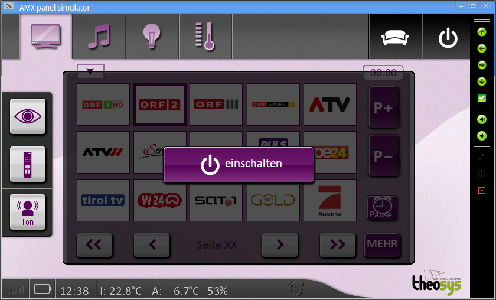
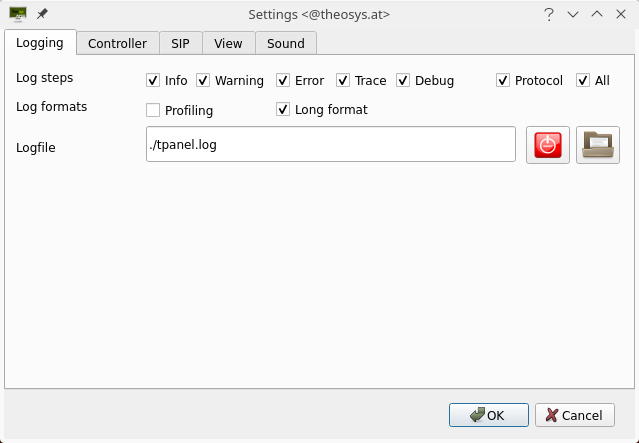
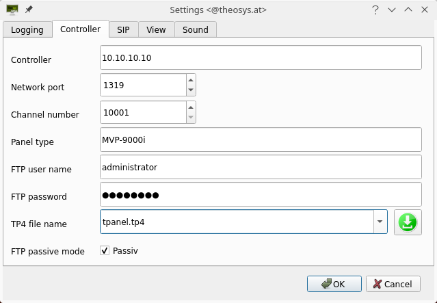
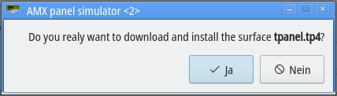
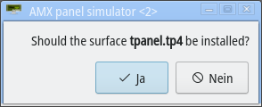
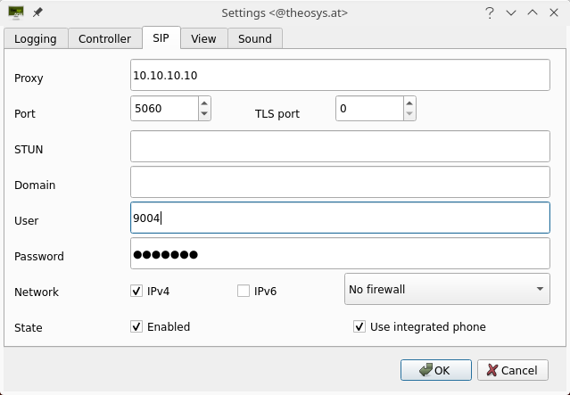
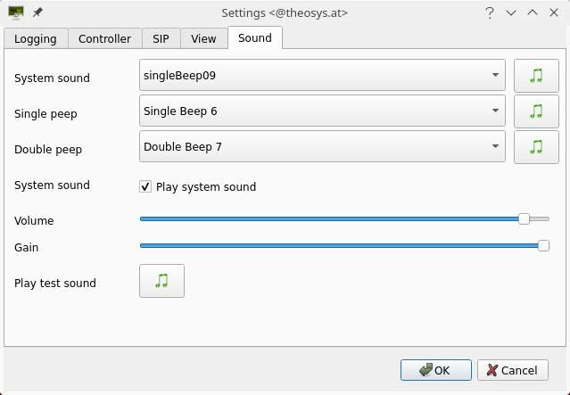

TPanel
TPanel
Reference guide
Written by Andreas Theofilu <andreas@theosys.at>
© 2022 to 2023 by Andreas Theofilu
Table of contents
Old discontinued equipment from AMX 9
Downloading the surface from the NetLinx 15
System sound (play system sound) 22
Using TPanel on a mobile device 24
Enable APK installs on non Samsung devices 24
Enable APK installs on Samsung devices 24
Panel to panel communication 26
RGB Triplets and Names For Basic 88 Colors 33
Border Styles And Programming Numbers 35
Abbildungsverzeichnis
Picture 1: Log settings (desktop) 13
Picture 2: Controller (NetLinx) settings (desktop) 15
Picture 3: Question to download a file. 17
Picture 4: Install surface? 17
Picture 6: Optical settings 19
Picture 7: Navigation wheel on an MVP-5200i 20
Picture 8: Toolbar of TPanel 20
TPanel is an emulation of some AMX G4 touch panels. The panels used to verify the proper communication protocol and the behavior were an AMX MVP-5200i, AMX NXD-700Vi and an AMX MST-701.
This manual describes the commands implemented and some specials of this program. TPanel was designed for *NIX desktops (Linux, BSD, …) as well as Android and iOS operating systems. Currently there exists no Windows version and there probably never will.
The software uses internally the Skia1 library for drawing all objects and the Qt 6.x library to display the objects. TPanel is written in C++. This makes it even on mobile platforms fast and reliable. It has the advantage to not drain the battery of any mobile device while running as fast as possible. Compared to commercial products the battery lasts up to 10 times longer.
I’m a professional programmer and years ago I got in touch with AMX. I developed solutions for residential requirements in NetLinx with different AMX panels. With time the customers wanted to have the surface on their phone or a tablet and there was (is?) only one solution available on the market. While this software is very good and supports everything up to TP5 commands, the license is rather expensive. For me as a private person, too expensive. But I bought some used AMX NetLinx on the Internet and build my own smart home where I can control lights, hazard and my consumer electronics (TV, radio, audio, video, …). I bought also some used AMX panels but had no luck with the batteries in them. To buy a new battery from AMX was too expensive and it didn’t pay off for such old devices. Buying a license for the commercial version (TPControl) was also no option because I would need 4 of them. So I decided to program my own surface and it should behave as a real device from AMX.

Picture
1: Main window with my
surface
There are a lot of possibilities to build a smart home. Makers can use a Raspberry PI or an Arduino or something similar. You can create circuits to make serial ports, infrared control, I/O ports and relays. This is a lot of effort and you may spent up to several hundred Euros to build just a controller.
On the other side you can control your lights, the hazard and some modern TVs over Alexa and co. While this works it has the disadvantage to need an internet connection and there is a big cloud behind. If the internet is not available for whatever reason, you can’t control anything. Beside that it exposes your devices to the Internet you never know who may access them. This is a security whole and you should take care of it.
For me some essential points are that I want to be absolutely independent of any internet connection and any cloud. I wanted to have a system which needs only a local network. Therefor I need a controller handling the smart home. It should be cheap and easy to handle. Since AMX offers all the necessary software to program without the need of a company account it is easy to get the knowledge to program an AMX NetLinx. Beside this it is really easy to get a used AMX NetLinx from eBay. I bought mine for about 50 Euros. Even some older equipment like volume controllers (AXB-VOL-3) are still available on eBay. With a NI-3100 NetLinx you can do everything you need to make your home smart. If you like, you can try to find some G4 panels also on the internet and you will find them.
To make it short: AMX is a fast and cheap way to implement just the software to make a smart home if you buy used equipment. In most cases you need no additional hardware (beside a local network). On the other side you must be interested in programming and you must be willing to learn an easy 3rd generation language like NetLinx is. This are the reasons for me to use AMX.
Device |
Description |
NI-700 |
The AMX NI-700 was designed to meet the needs of single room requirements while keeping cost in mind all in a 1RU box. The unit can control a limited number of video players, projectors, lights, thermostats, and other electronic equipment. The NI-700 is ideal for classrooms, conference rooms, hotel rooms and so much more. Includes: 2-pin 3.5 mm mini-Phoenix female PWR connector, 4-pin 3.5 mm mini-Phoenix female connector, 6-pin 3.5 mm mini-Phoenix female I/O connector, CC-NIRC IR Emitter |
NI-900 |
The AMX NI-900 was created to automate and control numerous items in 1 large room or several small rooms. The NI-900 is ideal since it can support several different devices with numerous different communication formats. Common applications include hotel rooms, home theaters, and other environments. The NI-900 is configured to to control a small number of lights, thermostats, flat panels, and other audio video equipment. Includes: 2-pin 3.5 mm mini-Phoenix female PWR connector, 6-pin 3.5 mm mini-Phoenix female I/O connector, Three CC-NIRC IR Emitters, Two 4-pin 3.5 mm mini-Phoenix female connectors. |
NI-2100 |
The AMX NI-2100 was designed for the automation and control of medium sized rooms and multiple room applications. The unit features 64MB of RAM and 3 configurable RS-232 / RS-422 / RS-485 serial ports. Programming the NI-2100 is simple since it is device discovery enabled offering several functions definitions for standardizing devices as well as default touch panel button assignments, and control and feedback methods. Includes: 2-pin 3.5 mm mini-Phoenix (female) PWR connector, 4-pin 3.5 mm mini-Phoenix (female) AxLink connector, 6-pin 3.5 mm mini-Phoenix female I/O connector, 8-pin 3.5 mm mini-Phoenix female Relay connector, Two CC-NIRC IR Emitters, Two removable rack ears. |
NI-3100 |
The AMX-3100 was designed for large rooms or even multiple rooms where you need the ultimate control and automation. The controller can control numerous items including audio/video conferencing, projectors, DVD and Blu-Ray players, lights, thermostats and other electronic equipment found in larger rooms. Not only can it accomplish what you need now it can also provide solutions for future needs with its easy expansion capabilities. Installation is easy with device discovery enabled and performance is top notch with the speedy processor and 64MB of RAM. Includes: 2-pin 3.5 mm mini-Phoenix (female) PWR connector, 4-pin 3.5 mm mini-Phoenix (female) AxLink connector, 10-pin 3.5 mm mini-Phoenix (female) I/O connector, Two 8-pin 3.5 mm mini-Phoenix female Relay connectors, Two CC-NIRC IR Emitters, Two removable rack ears. |
NI-4100 |
The NI-4100, part of the NI Series of Master Controllers, is geared to meet the high-end control and automation requirements of the most sophisticated and complex commercial and residential installations. This controller integrates the largest number of devices including DVD players, projectors, lighting, thermostats and other electronic equipment. In technology- intensive environments, this solution can be used to accommodate the future addition of more devices and control capabilities |
AXB-VOL-3 |
The AXB-VOL3 Three-Channel Volume Control provides three audio volume control channels. Each line-level channel, opto-isolated from system ground, can be configured for balanced or unbalanced line operation. The AXB-VOL3 is programmable for 128 steps of audio level, audio mute, variable ramp speed and level presets. The AXB-VOL3 connects to NetLinx control systems using the 4-wire AXlink data/power bus; it can be used for remote or rack mount applications. |
NXC-VOL4 |
NXC-VOL4 by AMX offers four discrete volume control channels with LED feedback and is programmable for mono or stereo operation, and balanced or unbalanced audio connections. Programmed features such as audio levels, audio mute, variable ramp speeds and preset levels. Use the on-board jumpers to set the gain/attenuation (Unity, Pro level (+4 dBu) to Consumer level (-10 dBu) conversion, or Consumer level to Pro level on each channel). NetLinx Control Cards provide flexible, modular building blocks for creating advanced control applications. |
EXB-COM2 |
ICSLan Device Control Boxes allow users to manage devices remotely from a Controller over an Ethernet network. This provides a beautifully simple method for a centralized control environment allowing users to share a controller among multiple smaller rooms versus controllers in every room. Ethernet has become the industry standard for connecting devices and the ICSLan Device Control Boxes make it easy to introduce control to equipment such as projectors located extended distances from a Controller. Additionally, the number of ports on an AMX Controller can be expanded when all ports are fully populated. Because they employ Native NetLinx technology, it is extremely simple to add an EXB to an AMX installation. |
You can program TPanel using the commands in this section, to perform a wide variety of operations using Send_Commands and variable text commands.
A device must first be defined in the NetLinx programming language with values for the Device: Port: System (in all programming examples - Panel is used in place of these values and represents TPanel program).
TPanel supports currently the pinch gesture and the swipe gestures. With a pinch gesture it is possible to open the setup dialog. It can be used on any device with a touch screen. The swipe gestures are send as such to a NetLinx and it’s up to you to do something with it.
The setup dialog allows the setting of different things. It’s look and feel depends on the operating system. On a desktop it is a dialog box and consists of tabs on the top allowing to select the wanted page.
On iOS and Android the native setup dialogs are used. While on iOS the setup is separated into subpages, this is not supported on Android yet (although Android offers this possibility).
Currently 5 pages are available (sections on Android):
Logging → Settings for the logfile.
Controller → Everything about the AMX NetLinx.
SIP → Session Initiation Protocol used for phone calls.
View → Some settings about visual effects.
Sound → Some sound settings.
The following sections show the setup dialog as it is on a desktop. The look differs on mobile devices but the possible selections are the same.
The logging is meant to be enabled in case of problems. For example if you find a situation where the program crashes. In such a case logging can help the developers to find the course for the crash.
On mobile devices logging is disabled by default. The reasons are, that a special permission to the disc is necessary and by default the logfile is in a place where the user have no access to it. Enabling logging means also to put the logfile somewhere on the disc where a user has access to it. This can easily be done with a file dialog. Defining the path and name of the logfile also asks for permissions in case they are not already granted.
Attention!
Enabling the option Trace
or all log levels on a mobile device will create a huge file
in a short time. It is possible that your device becomes unusable!
P
icture
1: Log settings (desktop)
The logging is based on states. This means that every stage of logging can be enabled or disabled independently of the other stages. There exists also two shortcuts: Protocol and All.
The Protocol stage is a combination of Info, Warning and Error.
The All stage enables all stages. This produces a lot of output and should not be used on a mobile device. When this is enabled everything is logged into a file. Because the program uses a lot of threads inside the content of the logfile may look funny sometimes. To be able to follow a thread, the thread ID is part of the logfile.
If you’re not a developer I suggest to disable logging at all. Especially on a mobile device.
If this is enabled together with the Trace log option, a time stamp is printed at the end of each method.
TRC 75, {entry TExpat::parse()
TRC 34, {entry TValidateFile::isValidFile(const string& file)
TRC , }exit TValidateFile::isValidFile(const string& file) Elapsed time: 2508[ns] --> 0s 0ms
TRC , Parsing XML file /usr/share/tpanel/map.xma
TRC , }exit TExpat::parse() Elapsed time: 43929457[ns] --> 0s 43ms
TRC 318, {entry TExpat::getElementIndex(const string& name, int* depth)
TRC , }exit TExpat::getElementIndex(const string& name, int* depth) Elapsed time: 4511[ns] --> 0s 0msThe elapsed time is printed in nanoseconds as well as in seconds and milliseconds.
This adds additional information like a time stamp. If Trace is enabled you’ll see also the file name where the class is located along with the line number where the message was executed from.
2023-04-03 18:13:19 TRC 95, tsipclient.cpp , 7ff6cf9169c0 {entry TSIPClient::TSIPClient() 2023-04-03 18:13:19 TRC 970, tconfig.cpp , 7ff6cf9169c0 {entry TConfig::getSIPstatus() 2023-04-03 18:13:19 TRC , tconfig.cpp , 7ff6cf9169c0 }exit TConfig::getSIPstatus() Elapsed time: 417[ns] --> 0s 0ms 2023-04-03 18:13:19 TRC , tsipclient.cpp , 7ff6cf9169c0 }exit TSIPClient::TSIPClient() Elapsed time: 42598[ns] --> 0s 0ms 2023-04-03 18:13:19 TRC 3969, tpagemanager.cpp , 7ff6cf9169c0 {entry TPageManager::runClickQueue() 2023-04-03 18:13:19 TRC , tpagemanager.cpp , 7ff6cf9169c0 }exit TPageManager::runClickQueue() Elapsed time: 76981[ns] --> 0s 0ms 2023-04-03 18:13:19 TRC 4017, tpagemanager.cpp , 7ff6cf9169c0 {entry TPageManager::runUpdateSubViewItem() 2023-04-03 18:13:19 PRT ++, , 7ff6cf9136c0 Thread "TPageManager::runClickQueue()" was started. 2023-04-03 18:13:19 TRC , tpagemanager.cpp , 7ff6cf9169c0 }exit TPageManager::runUpdateSubViewItem() Elapsed time: 50975[ns] --> 0s 0ms 2023-04-03 18:13:19 TRC , tpagemanager.cpp , 7ff6cf9169c0 }exit TPageManager::TPageManager() Elapsed time: 4109395594[ns] --> 4s 109ms 2023-04-03 18:13:19 TRC 94, tlock.cc , 7ff6cf9169c0 {entry TLock<_TMutex>::~TLock() 2023-04-03 18:13:19 TRC 308, tlock.cc , 7ff6cf9169c0 {entry TLock<_TMutex>::removeLock(__LOCKLIST_t& e) 2023-04-03 18:13:19 PRT ++, , 7ff6cf1126c0 Thread "TPageManager::runUpdateSubViewItem()" was started. 2023-04-03 18:13:19 DBG --, , 7ff6cf9169c0 Lock for mutex handle 0x558c84eb2138 will be removed on file tpagemanager.cpp at line 701. 2023-04-03 18:13:19 TRC , tlock.cc , 7ff6cf9169c0 }exit TLock<_TMutex>::removeLock(__LOCKLIST_t& e) Elapsed time: 182171[ns] --> 0s 0ms 2023-04-03 18:13:19 TRC , tlock.cc , 7ff6cf9169c0 }exit TLock<_TMutex>::~TLock() Elapsed time: 215103[ns] --> 0s 0ms
This line defines where the log should be written. Select a path and name for the logfile. If you want to see some logs on a mobile device (phone, …) you must make sure that the file is written somewhere in the user space. By default the log file is set to the internal directory where the program itself is stored. This directory is accessible only by the program!
Note: On mobile devices you should not activate Trace because this writes a lot of information in a very short time. The program is not only slowed down but it may fill up your memory in the phone very quick.
The controller page let you set everything about the NetLinx. There is the IP address the controller is listening on and you may define the FTP credentials to download TP4 files directly from the NetLinx.
P
icture
2: Controller (NetLinx)
settings (desktop)
From version 1.3.0 on it is possible to put one or more normal TP4 files on the disc of the NetLinx. The name of the files doesn’t matter, because the settings dialog is reading the directory on the NetLinx and show all files found with an extension TP4. If no TP4 – file was found on the NetLinx, the default file tpanel.tp4 is set in the settings dialog. Of course this works only if a valid IP address or a network name was defined. Additionally the FTP access of the NetLinx must be enabled.
If TPanel is started and there is no surface found, it tries to connect to the NetLinx via FTP (File Transfer Protocol) with the credentials defined in the settings. If it succeeds and a file is found, then it downloads the file and unpacks it. Afterward TPanel loads the fresh surface and displays it.
If there is already a surface available and the name of the surface file in the settings dialog is changed, it tries to download this new file. If it succeeds it deletes the old surface and unpacks the new one. Afterward it restarts itself.
On a desktop as well as on Android this is working. On iOS the setup dialog doesn’t support run time settings from outside. Therefor you must know the name of the TP4-file and write it into the input line. When the setup returns to the application, the surface will be downloaded as on any other platform.
Enter in this field either the network name of the NetLinx or the IP address. If this field contains no valid address the program is not able to connect the NetLinx. This is also necessary to enable TPanel to access the disc of the NetLinx to search for TP4 files.
Note: Currently only plain access is possible. TPanel doesn’t allow encrypted access to a NetLinx!
Enter the network port number the NetLinx is listening on. If not changed in the setup of the NetLinx this is port 1319.
Enter the channel number of the panel. This must be a number between 10000 and 19999. It must be a unique number. This means that no other panel should have this number.
Enter here the description of the panel. This should be a name supported by TPDesign4. For example a valid name would be MVP-5200 or NXD-700V. Avoid a small “i” at the end because this would mean that the panel can communicate with another one. Currently the panel to panel communication is not implemented in TPanel!
This defines the user name of the FTP user. By default this is set to administrator. The user name is used to automatically login to the NetLinx and look for a TP4 file.
This defines the password needed to logon to the NetLinx via FTP. By default this is set to password. Set this to the password the NetLinx expects.
This defines the name of a TP4 file. Such a file can be downloaded automatically from TPanel. If the FTP credentials (user name and password) are correct and there is at least one TP4 file on the disc of the NetLinx, then TPanel downloads the file, unpacks it and installs it. After an automatic restart the new surface is visible.
This so called combo box is the combination of an edit line and a list. When the settings dialog is opened, TPanel tries to connect to the NetLinx with the given FTP credentials. If it succeeds it reads the root directory of the NetLinx. It puts each file with a file extension of TP4 into this element. When you click on the small arrow on the right end of the line, it opens up and shows the content, if any. While this is true for desktops, it works similar for Android. The look and feel depends on the flavor of your phone.
On iOS this doesn’t work. There it is a simple input line where you can type the name of the file. File names are case sensitive. This means that you must take care about capital and small letters!
If there were no TP4 files found on the NetLinx then it contains only the default file name tpanel.tp4.
On the right end of this line is a button with a down arrow visible. If you click on it a dialog box opens (not true for Android and iOS!).
I

Picture
3: Question to download a
file.
f you want to download this file click on
YES. Otherwise NO. If you select YES, then the force button gets a
red background. This means that the download starts at the moment the
settings dialog is closed.
If you select another surface file and close the dialog, TPanel ask you if you want to download the new surface.
I

Picture
4: Install surface?
f you click on YES the download starts.
Otherwise nothing happens.
The FTP protocol knows two different methods to establish a data channel to transfer data from a computer. The default mode is called port and requires that your client has full access to the computer. This works as long as there is no firewall in between who blocks the network port 20. To overcome any firewalls, the protocol knows a mode called passive. In this case the client connects to a second channel the same way as it did with the control channel. This makes sure that the client can connect even if there is a firewall between. In doubt check this option.
This is a protocol to connect TPanel to a digital phone. There is a full soft phone implemented into TPanel.
P icture 5: SIP settings
The name or IP address of the SIP server.
The network port the SIP server is listening on. By default this is set to port 5060.
If this is other than 0, TPanel tries to connect for an encrypted SIP call over this network port. Otherwise it tries to use a random port number. If this is set the standard port number is 5061.
Sets the IP address for the STUN server.
Sets the realm for authentication. In most cases this is the same as the proxy. Therefore it is optional and mostly left empty.
Sets the user name for authentication with the SIP server (proxy address).
Sets the user password so TPanel can connect to the SIP server (SIP proxy server).
This defines the type of network to use. If IPv4 is checked, then this network protocol is used.
If IPv6 is checked then this protocol will be used. This is also the default protocol and will be used if both protocols are checked. It means also, that the device must be able to use IPv6 and the network it is connected to must also be able to handle this protocol. In doubt disable IPv6.
The Combobox let you choose the firewall type between your device and the SIP server, if any. By default no firewall is assumed. If there is a firewall and if you have problems to connect to the SIP server, you can choose between to use a STUN server, ICE or UPNP. Ask your local network administrator to find out the correct settings.
If this is checked, the SIP settings are enabled and TPanel tries to connect to the SIP proxy server.
This tab allows you to set some features of visibility. It allows to select scaling or to force a toolbar to be displayed.
P icture
6: Optical settings
icture
6: Optical settings
On a desktop this is disabled by default and if enabled has no effect.
On a mobile device this is enabled by default and makes sure that the surface fits the size of the display. TPanel maintains the aspect ratio which means that you may have a black bar on the left side or at bottom. It depends on the size of the display. If scaling is disabled the real size is used. It depends on the size of the simulated panel (NXD-700Vi has 800 x 480 pixels) and the number of pixels the mobile device offers. For this example we can assume that a mobile device has a higher resolution and therefor the surface would look very small.
This makes sense only on a desktop. Therefor it is disabled on a mobile device.
If this is checked, TPanel shows a small message on startup from the command line.
$
tpanel
-c tpanel.cfg
tpanel
v1.3.0
(C) Andreas Theofilu <andreas@theosys.at>
This
program is under the terms of GPL version 3
The toolbar simulates some hard buttons of a real panel. If we take the panel type MVP-5200i for example, we have a round wheel on the right which is also 4 buttons. There is an additional button in the center of the wheel. This buttons are programmable with TPDesign4.
B
Picture
7: Navigation wheel on an
MVP-5200i
ecause such buttons are a practical shortcut
for navigation, TPanel has a toolbar with some similar
functions.
A
Picture 8:
Toolbar of TPanel
s you can see, there are navigation buttons
into 4 directions and a select button. Then the toolbar offers 2
buttons to control volume.
Under the volume buttons you find 3 more buttons:
This opens the settings dialog (look at Setup Dialog at page 12).
T his opens an about dialog:
T
Picture
9: About dialog on a mobile
device
his ends the program. If you press this
button the application ends truly.
If the box called Lock rotation is checked, then the screen is locked and will not rotate anymore.
If this is not checked, the surface will rotate without changing the orientation. This means: If the surface was made for landscape, for example, it will only rotate to normal landscape (landscape left) or inverse landscape (landscape right). It stays at one of this two landscape formats even if it is turned to portrait or inverse portrait.
This setting is independent of any system setting. Even if the system is set to lock screen, the surface will rotate when this is not checked.
This tab allows the setting of some sound oriented options. It is possible to select a touch sound, the beep sound and the double beep sound.

Picture
10: Sound settings
(desktop)
This noise is played whenever a button was hit. It can be deactivated by removing the check. The drop down box offers some different noises. You can select one and by pressing the button with the green note on the right end of the selector the sound is played.
This lets you select the sound of the single beep. This sound is played when TPanel receives either the command BEEP or ABEEP. It is possible to play the sound immediately by pressing on the button on the right side of the selector.
This lets you select the sound of the double beep. This sound is played when TPanel receives the command DBEEP or ADBEEP. It is possible to play the sound immediately by pressing on the button on the right side of the selector.
If this is checked a sound is played on every button hit. The commends BEEP and DBEEP also play a sound.
If this is not checked, the button hits as well as the commands BEEP and DBEEP are silent. The commands ABEEP and ADBEEP are playing always a sound independently of the setting of this check box.
This slider sets the volume from TPanel only. The effective volume depends of the system (global) volume setting and the position of this slider. This slider does not change the system volume setting.
Currently not implemented.
This button plays a short melody to test the sound settings.
TPanel is currently not available in the Play Store of Android. Therefor it must be downloaded from my page at https://www.theosys.at. Get the latest version (tpanel_android_vX.X.X.apk) and copy it to a location on your mobile device. The device must run with Android 11 or newer to be able to use the application.
Go to your phones Settings
Go to Security & privacy > More settings.
Tap on Install apps from external sources.
Select the browser (e.g., Chrome or Firefox) you want to download the APK files from.
Toggle Allow app installs on.
Go to your phone’s Settings.
Go to Biometrics and security > Install unknown apps.
Select the browser (e.g., Chrome or Firefox) you want to download the APK files from.
Toggle Allow app installs on.
Because of the restrictions from Apple it is not possible to offer a binary package for iOS. If you want to have this application on your iPhone or iPad, you must compile and install it yourself. You’ll find the source and a description of how to do this at Github.
Once the application is installed, it can be started. On the first start it presents a small screen with some buttons. Press either on Setup, make a pinch gesture or push the settings button on the toolbar on right, if present, to get the settings dialog. Look at Setup Dialog on page 12 for detailed information.
If the setup is completed and the dialog is closed, it takes up to 30 seconds until TPanel connects to the NetLinx. Now two scenarios may happen:
There is no TP4 file on the NetLinx.
After
the restart the previous surface (the green one) reappears. Open
TPDesign4 and upload your surface to TPanel as you
would do for a real panel. The transfer display occurs and shows the
progress. At the moment the transfer finished, it takes up to 30
seconds until the new interface appears. Now you can use TPanel
the same way as a real panel.
TP4 file on the NetLinx.
Upload a
TP4 file to the NetLinx via FTP. Open the setup dialog and enter the
name of the file under the tab Controller
in the field TP4
file name. Make sure the FTP user name and the
FTP password is correct. Press the button Ok
and wait. You’ll see a busy dialog during the download and then
the application restarts. When it reappears the new surface is
visible.
TPanel is far from complete currently. Any command not documented here is not supported or may not work as expected. Therefor it may be that your NetLinx program sends commands who are ignored but are mandatory for your surface to work. It is also possible that some commands documented here are not working as expected. In such cases please inform me!
Please send an eMail to andreas@theosys.at and attach a short demo program together with a surface file which triggers the error or problem. I will try to fix TPanel as fast as possible. In your eMail put the following topics:
The following things will not work in the near future because they are proprietary or a secret of AMX. I’m not able to find out without help.
If you’ve defined a password for a resource, the access to a camera for example, the password is encrypted. Until now I was not able to find out the algorithm used to decrypt it. Therefor this will not work. A workaround could be to open the XML file prj.xma and search for the section resourceList. There you can find the definitions for the wanted resource. The section may look like:
Change the line
<password encrypted="1">2312F21D0E2BA367</password>into
<password encrypted="0">password</password>The codec used for communication between panels is proprietary. It is close to a standard but some mandatory parameters are different. I had not the time to investigate in this and my knowledge of this stuff is limited. Therefor this is not supported currently and may not be for a long time.
I was not able to find out what it is. Because of this it is not supported.
I plan to implement this for Linux desktops. Because I for myself don’t need it, it has very low priority. So please be patient.
While it is trivial to support the commands (most of them) it is not so easy to read the configuration files. They are encrypted and until today I was not able to find out the algorithm to decrypt them. If I ever find this out, I will support TP5 files also and not only most of the commands.
In the mean time some of the G5 commands are supported. In short: All commands similar to one of the G4 commands are supported. Included is the command ^BMP which is the same as the G4 command but has some extensions. This should make it easier for integrators to use TPanel mostly the same way as a native G5 panel although the surface is still G4.
Page Commands |
|
@AFP ^AFP |
Flip to specified page (using the named animation). Syntax: "'^AFP-<page name>,<animation>,<origin>,<duration>'" Variables:
Note: The animation is currently not implemented. The page will be visible at once and therefor the parameters Animation, Origin and Duration are ignored! Examples: SEND_COMMAND Panel,"'^AFP-NextPage,slide,4,5'" Flip to NextPage sliding from the left for half a second. SEND_COMMAND Panel,"'^AFP-,centerdoorfade,2,10'" Flip to NextPage center door fade from the top for a second. |
@APG |
Add a specific popup page to a specified popup group if it does not already exist. If the new popup is added to a group which has a popup displayed on the current page along with the new pop-up, the displayed popup will be hidden and the new popup will be displayed. Syntax: "'@APG-<popup page name>;<popup group name>'" Variable:
Example: SEND_COMMAND Panel,"'@APG-Popup1;Group1'" Adds the popup page ’Popup1’ to the popup group ’Group1’. |
@CPG |
Clear all popup pages from specified popup group.
Syntax: "'@CPG-<popup group name>'" Variable:
Example: SEND_COMMAND Panel,"'@CPG-Group1'" Clears all popup pages from the popup group ’Group1’. |
@DPG |
Delete a specific popup page from specified popup group if it exists. Syntax: "'@DPG-<popup page name>;<popup group name>'" Variable:
Example: SEND_COMMAND Panel,"'@DPG-Popup1;Group1'" Deletes the popup page ’Popup1’ from the popup group ’Group1’. |
@PHE |
Set the hide effect for the specified popup page to the named hide effect. Syntax: "'@PHE-<popup page name>;<hide effect name>'" Variable:
Example: SEND_COMMAND Panel,"'@PHE-Popup1;Slide to Left'" Sets the Popup1 hide effect name to ’Slide to Left’. |
@PHP |
Set the hide effect position. Only 1 coordinate is ever needed for an effect; however, the command will specify both. This command sets the location at which the effect will end at. Syntax: "'@PHP-<popup page name>;<x coordinate>,<y coordinate>'" Variable:
Example: SEND_COMMAND Panel,"'@PHP-Popup1;75,0'" Sets the Popup1 hide effect x-coordinate value to 75 and the y-coordinate value to 0. |
@PHT |
Set the hide effect time for the specified popup page. Syntax: "'@PHT-<popup page name>;<hide effect time>'" Variable:
Example: SEND_COMMAND Panel,"'@PHT-Popup1;50'" Sets the Popup1 hide effect time to 5 seconds. |
@PPA ^PPA |
Close all popups on a specified page. If the page name is empty, the current page is used. Same as the ’Clear Page’ command in TPDesign4. Syntax: "'@PPA-<page name>'" Variable:
Example: SEND_COMMAND Panel,"'@PPA-Page1'" Close all pop-ups on Page1. |
@PPF ^PPF |
Deactivate a specific popup page on either a specified page or the current page. If the page name is empty, the current page is used (see example 2). If the popup page is part of a group, the whole group is deactivated. This command works in the same way as the ’Hide Popup’ command in TPDesign4. Syntax: "'@PPF-<popup page name>;<page name>'" Variable:
Example: SEND_COMMAND Panel,"'@PPF-Popup1;Main'" Example 2: SEND_COMMAND Panel,"'@PPF-Popup1'" Deactivates the popup page ’Popup1’ on the current page. |
@PPG ^PPG |
Toggle a specific popup page on either a specified page or the current page. If the page name is empty, the current page is used (see example 2). Toggling refers to the activating/deactivating (On/Off) of a popup page. This command works in the same way as the ’Toggle Popup’ command in TPDesign4. Syntax: "'@PPG-<popup page name>;<page name>'" Variable:
Example: SEND_COMMAND Panel,"'@PPG-Popup1;Main'" Toggles the popup page ’Popup1’ on the ’Main’ page from one state to another (On/Off). Example 2: SEND_COMMAND Panel,"'@PPG-Popup1'" Toggles the popup page ’Popup1’ on the current page from one state to another (On/Off). |
@PPK ^PPK |
Kill refers to the deactivating (Off) of a popup window from all pages. If the pop-up page is part of a group, the whole group is deactivated. This command works in the same way as the 'Clear Group' command in TPDesign 4. Syntax: "'@PPK-<popup page name>'" Variable:
Example: SEND_COMMAND Panel,"'@PPK-Popup1'" Kills the popup page ’Popup1’ on all pages. |
@PPM ^PPM |
Set the modality of a specific popup page to Modal or NonModal. A Modal popup page, when active, only allows you to use the buttons and features on that popup page. All other buttons on the panel page are inactivated. Syntax: "'@PPM-<popup page name>;<mode>'" Variable:
Example: SEND_COMMAND Panel,"'@PPM-Popup1;Modal'" Sets the popup page ’Popup1’ to Modal. SEND_COMMAND Panel,"'@PPM-Popup1;1'" Sets the popup page ’Popup1’ to Modal. |
@PPN ^PPN |
Activate a specific popup page to launch on either a specified page or the current page. If the page name is empty, the current page is used (see example 2). If the popup page is already on, do not re-draw it. This command works in the same way as the ’Show Popup’ command in TPDesign4. Syntax: "'@PPN-<popup page name>;<page name>'" Variable:
Example: SEND_COMMAND Panel,"'@PPN-Popup1;Main'" Activates ’Popup1’ on the ’Main’ page. Example 2: SEND_COMMAND Panel,"'@PPN-Popup1'" Activates the popup page ’Popup1’ on the current page. |
@PPT ^PPT |
Set a specific popup page to timeout within a specified time. If timeout is empty, popup page will clear the timeout. Syntax: "'@PPT-<popup page name>;<timeout>'" Variable:
Example: SEND_COMMAND Panel,"'@PPT-Popup1;30'" Sets the popup page ’Popup1’ to timeout within 3 seconds. |
@PPX ^PPX |
Close all popups on all pages. This command works in the same way as the 'Clear All' command in TPDesign 4. Syntax: "'@PPX'" Example: SEND_COMMAND Panel,"'@PPX'" Close all popups on all pages. |
@PSE |
Set the show effect for the specified popup page to the named show effect. Syntax: "'@PSE-<popup page name>;<show effect name>'" Variable:
Example: SEND_COMMAND Panel,"'@PSE-Popup1;Slide from Left'" Sets the Popup1 show effect name to ’Slide from Left’. |
@PSP |
Set the show effect position. Only 1 coordinate is ever needed for an effect; however, the command will specify both. This command sets the location at which the effect will begin. Syntax: "'@PSP-<popup page name>;<x coordinate>,<y coordinate>'" Variable:
Example: SEND_COMMAND Panel,"'@PSP-Popup1;100,0'" Sets the Popup1 show effect x-coordinate value to 100 and the y-coordinate value to 0. |
@PST |
Set the show effect time for the specified popup page. Syntax: "'@PST-<popup page name>;<show effect time>'" Variable:
Example: SEND_COMMAND Panel,"'@PST-Popup1;50'" Sets the Popup1 show effect time to 5 seconds. |
PAGE ^PGE |
Flips to a page with a specified page name. If the page is currently active, it will not redraw the page. Syntax: "'PAGE-<page name>'" Variable:
Example: SEND_COMMAND Panel,"'PAGE-Page1'" Flips to page1. |
PPOF |
Deactivate a specific popup page on either a specified page or the current page. If the page name is empty, the current page is used (see example 2). If the popup page is part of a group, the whole group is deactivated. This command works in the same way as the ’Hide Popup’ command in TPDesign4. Syntax: "'PPOF-<popup page name>;<page name>'" Variable:
Example: SEND_COMMAND Panel,"'PPOF-Popup1;Main'" Deactivates the popup page ’Popup1’ on the Main page. Example 2: SEND_COMMAND Panel,"'PPOF-Popup1'" Deactivates the popup page ’Popup1’ on the current page. |
PPOG |
Toggle a specific popup page on either a specified page or the current page. If the page name is empty, the current page is used (see example 2). Toggling refers to the activating/deactivating (On/Off) of a popup page. This command works in the same way as the ’Toggle Popup’ command in TPDesign4. Syntax: "'PPOG-<popup page name>;<page name>'" Variable:
Example: SEND_COMMAND Panel,"'PPOG-Popup1;Main'" Toggles the popup page ’Popup1’ on the Main page from one state to another (On/Off). Example 2: SEND_COMMAND Panel,"'PPOG-Popup1'" Toggles the popup page ’Popup1’ on the current page from one state to another (On/Off). |
PPON |
Activate a specific popup page to launch on either a specified page or the current page. If the page name is empty, the current page is used (see example 2). If the popup page is already On, do not re-draw it. This command works in the same way as the ’Show Popup’ command in TPDesign4. Syntax: "'PPON-<popup page name>;<page name>'" Variable:
Example: SEND_COMMAND Panel,"'PPON-Popup1; Main'" Activates the popup page ’Popup1’ on the Main page. Example 2: SEND_COMMAND Panel,"'PPON-Popup1'" Activates the popup page ’Popup1’ on the current page. |
The following information provides the programming numbers for colors, fonts, and borders.
Colors can be used to set the colors on buttons, sliders, and pages. The lowest color number represents the lightest color-specific display; the highest number represents the darkest display. For example, 0 represents light red, and 5 is dark red.
RGB Values for all 88 Basic Colors |
||||||||||
Index No. |
Name |
Red |
Green |
Blue |
|
Index No. |
Name |
Red |
Green |
Blue |
0 |
Very Light Red |
255 |
0 |
0 |
|
45 |
Medium Aqua |
0 |
80 |
159 |
1 |
Light Red |
223 |
0 |
0 |
|
46 |
Dark Aqua |
0 |
64 |
127 |
2 |
Red |
191 |
0 |
0 |
|
47 |
Very Dark Aqua |
0 |
48 |
95 |
3 |
Medium Red |
159 |
0 |
0 |
|
48 |
Very Light Blue |
0 |
0 |
255 |
4 |
Dark Red |
127 |
0 |
0 |
|
49 |
Light Blue |
0 |
0 |
223 |
5 |
Very Dark Red |
95 |
0 |
0 |
|
50 |
Blue |
0 |
0 |
191 |
6 |
Very Light Orange |
255 |
128 |
0 |
|
51 |
Medium Blue |
0 |
0 |
159 |
7 |
Light Orange |
223 |
112 |
0 |
|
52 |
Dark Blue |
0 |
0 |
127 |
8 |
Orange |
191 |
96 |
0 |
|
53 |
Very Dark Blue |
0 |
0 |
95 |
9 |
Medium Orange |
159 |
80 |
0 |
|
54 |
Very Light Purple |
128 |
0 |
255 |
10 |
Dark Orange |
127 |
64 |
0 |
|
55 |
Light Purple |
112 |
0 |
223 |
11 |
Very Dark Orange |
95 |
48 |
0 |
|
56 |
Purple |
96 |
0 |
191 |
12 |
Very Light Yellow |
255 |
255 |
0 |
|
57 |
Medium Purple |
80 |
0 |
159 |
13 |
Light Yellow |
223 |
223 |
0 |
|
58 |
Dark Purple |
64 |
0 |
127 |
14 |
Yellow |
191 |
191 |
0 |
|
59 |
Very Dark Purple |
48 |
0 |
95 |
15 |
Medium Yellow |
159 |
159 |
0 |
|
60 |
Very Light Magenta |
255 |
0 |
255 |
16 |
Dark Yellow |
127 |
127 |
0 |
|
61 |
Light Magenta |
223 |
0 |
223 |
17 |
Very Dark Yellow |
95 |
95 |
0 |
|
62 |
Magenta |
191 |
0 |
191 |
18 |
Very Light Lime |
128 |
255 |
0 |
|
63 |
Medium Magenta |
159 |
0 |
159 |
19 |
Light Lime |
112 |
223 |
0 |
|
64 |
Dark Magenta |
127 |
0 |
127 |
20 |
Lime |
96 |
191 |
0 |
|
65 |
Very Dark Magenta |
95 |
0 |
95 |
21 |
Medium Lime |
80 |
159 |
0 |
|
66 |
Very Light Pink |
255 |
0 |
128 |
22 |
Dark Lime |
64 |
127 |
0 |
|
67 |
Light Pink |
223 |
0 |
112 |
23 |
Very Dark Lime |
48 |
95 |
0 |
|
68 |
Pink |
191 |
0 |
96 |
24 |
Very Light Green |
0 |
255 |
0 |
|
69 |
Medium Pink |
159 |
0 |
80 |
25 |
Light Green |
0 |
223 |
0 |
|
70 |
Dark Pink |
127 |
0 |
64 |
26 |
Green |
0 |
191 |
0 |
|
71 |
Very Dark Pink |
95 |
0 |
48 |
27 |
Medium Green |
0 |
159 |
0 |
|
72 |
White |
255 |
255 |
255 |
28 |
Dark Green |
0 |
127 |
0 |
|
73 |
Grey1 |
238 |
238 |
238 |
29 |
Very Dark Green |
0 |
95 |
0 |
|
74 |
Grey3 |
204 |
204 |
204 |
30 |
Very Light Mint |
0 |
255 |
128 |
|
75 |
Grey5 |
170 |
170 |
170 |
31 |
Light Mint |
0 |
223 |
112 |
|
76 |
Grey7 |
136 |
136 |
136 |
32 |
Mint |
0 |
191 |
96 |
|
77 |
Grey9 |
102 |
102 |
102 |
33 |
Medium Mint |
0 |
159 |
80 |
|
78 |
Grey4 |
187 |
187 |
187 |
34 |
Dark Mint |
0 |
127 |
64 |
|
79 |
Grey6 |
153 |
153 |
153 |
35 |
Very Dark Mint |
0 |
95 |
48 |
|
80 |
Grey8 |
119 |
119 |
119 |
36 |
Very Light Cyan |
0 |
255 |
255 |
|
81 |
Grey10 |
85 |
85 |
85 |
37 |
Light Cyan |
0 |
223 |
223 |
|
82 |
Grey12 |
51 |
51 |
51 |
38 |
Cyan |
0 |
191 |
191 |
|
83 |
Grey13 |
34 |
34 |
34 |
39 |
Medium Cyan |
0 |
159 |
159 |
|
84 |
Grey2 |
221 |
221 |
221 |
40 |
Dark Cyan |
0 |
127 |
127 |
|
85 |
Grey11 |
68 |
68 |
68 |
41 |
Very Dark Cyan |
0 |
95 |
95 |
|
86 |
Grey14 |
17 |
17 |
17 |
42 |
Very Light Aqua |
0 |
128 |
255 |
|
87 |
Black |
0 |
0 |
0 |
43 |
Light Aqua |
0 |
112 |
223 |
|
255 |
TRANSPARENT |
99 |
53 |
99 |
44 |
Aqua |
0 |
96 |
161 |
|
|
||||
Font styles can be used to program the text fonts on buttons, sliders, and pages. The following chart shows the default font type and their respective ID numbers generated by TPDesign4.
Default Font Styles and ID Numbers |
||||||
Font ID # |
Font type |
Size |
|
Font ID # |
Font type |
Size |
1 |
Courier New |
9 |
|
19 |
Arial |
9 |
2 |
Courier New |
12 |
|
20 |
Arial |
10 |
3 |
Courier New |
18 |
|
21 |
Arial |
12 |
4 |
Courier New |
26 |
|
22 |
Arial |
14 |
5 |
Courier New |
32 |
|
23 |
Arial |
16 |
6 |
Courier New |
18 |
|
24 |
Arial |
18 |
7 |
Courier New |
26 |
|
25 |
Arial |
20 |
8 |
Courier New |
34 |
|
26 |
Arial |
24 |
9 |
AMX Bold |
14 |
|
27 |
Arial |
36 |
10 |
AMX Bold |
20 |
|
28 |
Arial Bold |
10 |
11 |
AMX Bold |
36 |
|
29 |
Arial Bold |
8 |
NOTE: Fonts must be imported into a TPDesign4 project file. The font ID numbers are assigned by TPDesign4. These values are also listed in the Generate Programmer’s Report.
Border styles can be used to program borders on buttons, sliders, and popup pages.
Border Styles and Programming Numbers |
|||
No. |
Border Styles |
No. |
Border Styles |
0 - 1 |
No border |
10 - 11 |
Picture frame |
2 |
Single line |
12 |
Double line |
3 |
Double line |
20 |
Bevel-S |
4 |
Quad line |
21 |
Bevel-M |
5 - 6 |
Circle 15 |
22 - 23 |
Circle 15 |
7 |
Single line |
24 - 27 |
Neon inactive-S |
8 |
Double line |
40 - 41 |
Diamond 55 |
9 |
Quad line |
|
|
Button Query commands reply back with a custom event. There will be one custom event for each button/state combination. Each query is assigned a unique custom event type. The following example is for debug purposes only:
NetLinx Example: CUSTOM_EVENT[device,Address, Custom event type]
DEFINE_EVENT
CUSTOM_EVENT[TP,529,1001] // Text
CUSTOM_EVENT[TP,529,1002] // Bitmap
CUSTOM_EVENT[TP,529,1003] // Icon
CUSTOM_EVENT[TP,529,1004] // Text Justification
CUSTOM_EVENT[TP,529,1005] // Bitmap Justification
CUSTOM_EVENT[TP,529,1006] // Icon Justification
CUSTOM_EVENT[TP,529,1007] // Font
CUSTOM_EVENT[TP,529,1008] // Text Effect Name
CUSTOM_EVENT[TP,529,1009] // Text Effect Color
CUSTOM_EVENT[TP,529,1010] // Word Wrap
CUSTOM_EVENT[TP,529,1011] // ON state Border Color
CUSTOM_EVENT[TP,529,1012] // ON state Fill Color
CUSTOM_EVENT[TP,529,1013] // ON state Text Color
CUSTOM_EVENT[TP,529,1014] // Border Name
CUSTOM_EVENT[TP,529,1015] // Opacity
{
Send_String 0,"'ButtonGet Id=',ITOA(CUSTOM.ID),' Type=',ITOA(CUSTOM.TYPE)"
Send_String 0,"'Flag =',ITOA(CUSTOM.FLAG)"
Send_String 0,"'VALUE1 =',ITOA(CUSTOM.VALUE1)"
Send_String 0,"'VALUE2 =',ITOA(CUSTOM.VALUE2)"
Send_String 0,"'VALUE3 =',ITOA(CUSTOM.VALUE3)"
Send_String 0,"'TEXT =',CUSTOM.TEXT"
Send_String 0,"'TEXT LENGTH =',ITOA(LENGTH_STRING(CUSTOM.TEXT))"
}
All custom events have the following 7 fields:
Custom Event Fields |
|
Uint Flag |
0 means text is a standard string, 1 means Unicode encoded string |
slong value1 |
button state number |
slong value2 |
actual length of string (this is not encoded size) |
slong value3 |
index of first character (usually 1 or same as optional index) |
string text |
the text from the button |
text length (string encode) |
button text length |
These fields are populated differently for each query command. The text length (String Encode) field is not used in any command. These Button Commands are used in NetLinx Studio and are case insensitive:
Button Commands |
|||||||||||||||||||||||||||||||
^ANI |
Run a button animation (in 1/10 second). Syntax: "'^ANI-<vt addr range>,<start state>,<end state>,<time>'" Variable:
Example: SEND_COMMAND Panel,"'^ANI-500,1,25,100'" Runs a button animation at text range 500 from state 1 to state 25 for 10 second. |
||||||||||||||||||||||||||||||
^APF |
Add page flip action to a button if it does not already exist. Syntax: "'^APF-<vt addr range>,<page flip action>,<page name>'" Variable:
Example: SEND COMMAND Panel,"'^APF-400,Stan,Main Page'" Assigns a button to a standard page flip with page name 'Main Page'. |
||||||||||||||||||||||||||||||
^BAT |
Append non-unicode text. Syntax: "'^BAT-<vt addr range>,<button states range>,<new text>'" Variable:
Example: SEND_COMMAND Panel,"'^BAT-520,1,Enter City'" Appends the text 'Enter City' to the button’s OFF state. |
||||||||||||||||||||||||||||||
^BAU |
Append unicode text. Same format as ^UNI. Syntax: "'^BAU-<vt addr range>,<button states range>,<unicode text>'" Variable:
Example: SEND_COMMAND Panel,"'^BAU-520,1,00770062'" Appends Unicode text '00770062' to the button’s OFF state. |
||||||||||||||||||||||||||||||
^BCB |
Set the border color to the specified color. Only if the specified border color is not the same as the current color. Note: Color can be assigned by color name (without spaces), number or R,G,B value (RRGGBB or RRGGBBAA). Syntax: "'^BCB-<vt addr range>,<button states range>,<color value>'" Variable:
Example: SEND_COMMAND Panel,"'^BCB-500.504&510,1,12'" Sets the Off state border color to 12 (Yellow). Colors can be set by Color Numbers, Color name, R,G,B,alpha colors (RRGGBBAA) and R, G & B colors values (RRGGBB). Refer to the RGB Triplets and Names For Basic 88 Colors table on page 33. |
||||||||||||||||||||||||||||||
?BCB |
Get the current border color. Syntax: "'?BCB-<vt addr range>,<button states range>'" Variable:
Example: SEND COMMAND Panel,"'?BCB-529,1'" Gets the button 'OFF state' border color. information. The result sent to the Master would be: ButtonGet Id = 529 Type = 1011
Flag = 0
VALUE1 = 1
VALUE2 = 9
VALUE3 = 0
TEXT = #222222FF
TEXT LENGTH = 9
|
||||||||||||||||||||||||||||||
^BCF |
Set the fill color to the specified color. Only if the specified fill color is not the same as the current color. Note: Color can be assigned by color name (without spaces), number or R,G,B value (RRGGBB or RRGGBBAA). Syntax: "'^BCF-<vt addr range>,<button states range>,<color value>'" Variable:
Example: SEND_COMMAND Panel,"'^BCF-500.504&510.515,1,12'" SEND_COMMAND Panel,"'^BCF-500.504&510.515,1,Yellow'" SEND_COMMAND Panel,"'^BCF-500.504&510.515,1,#F4EC0A63''" SEND_COMMAND Panel,"'^BCF-500.504&510.515,1,#F4EC0A'" Sets the Off state fill color by color number. Colors can be set by Color Numbers, Color name, R,G,B,alpha colors (RRGGBBAA) and R, G & B colors values (RRGGBB). |
||||||||||||||||||||||||||||||
?BCF |
Get the current fill color. Syntax: "'?BCF-<vt addr range>,<button states range>'" Variable:
Example: SEND COMMAND Panel,"'?BCF-529,1'" Gets the button 'OFF state' fill color information. The result sent to the Master would be: ButtonGet Id = 529 Type = 1012
Flag = 0
VALUE1 = 1
VALUE2 = 9
VALUE3 = 0
TEXT = #FF8000FF
TEXT LENGTH = 9
|
||||||||||||||||||||||||||||||
^BCT |
Set the text color to the specified color. Only if the specified text color is not the same as the current color. Note: Color can be assigned by color name (without spaces), number or R,G,B value (RRGGBB or RRGGBBAA). Syntax: "'^BCT-<vt addr range>,<button states range>,<color value>'" Variable:
Example: SEND_COMMAND Panel,"'^BCT-500.504&510,1,12'" Sets the Off state border color to 12 (Yellow). Colors can be set by Color Numbers, Color name, R,G,B,alpha colors (RRGGBBAA) and R, G & B colors values (RRGGBB). |
||||||||||||||||||||||||||||||
?BCT |
Get the current text color. Syntax: "'?BCT-<vt addr range>,<button states range>'" Variable:
Example: SEND COMMAND Panel,"'?BCT-529,1'" Gets the button 'OFF state' text color information. The result sent to Master would be: ButtonGet Id = 529 Type = 1013
Flag = 0
VALUE1 = 1
VALUE2 = 9
VALUE3 = 0
TEXT = #FFFFFEFF
TEXT LENGTH = 9
|
||||||||||||||||||||||||||||||
^BDO |
Set the button draw order - Determines what order each layer of the button is drawn. Syntax: "'^BDO-<vt addr range>,<button states range>,<1-5><1-5><1-5><1-5><1-5>'" Variable:
Note: The layer assignments are from bottom to top. The default draw order is 12345. Example: SEND_COMMAND Panel,"'^BDO-530,1&2,51432'" Sets the button’s variable text 530 ON/OFF state draw order (from bottom to top) to Border, Fill, Text, Icon, and Image. Example 2: SEND_COMMAND Panel,"'^BDO-1,0,12345'" Sets all states of a button back to its default drawing order. |
||||||||||||||||||||||||||||||
^BFB |
Set the feedback type of the button. ONLY works on General-type buttons. Syntax: "'^BFB-<vt addr range>,<feedback type>'" Variable:
Example: SEND_COMMAND Panel,"'^BFB-500,Momentary'" Sets the Feedback type of the button to 'Momentary'. |
||||||||||||||||||||||||||||||
^BIM |
Set the input mask for the specified address. Syntax: "'^BIM-<vt addr range>,<input mask>'" Variable:
Example: SEND_COMMAND Panel,"'^BIM-500,AAAAAAAAAA'" Sets the input mask to ten ’A’ characters, that are required, to either a letter or digit (entry is required). |
||||||||||||||||||||||||||||||
^BMC |
Button copy command. Copy attributes of the source button to all the destination buttons. Note that the source is a single button state. Each state must be copied as a separate command. The <codes> section represents what attributes will be copied. All codes are 2 char pairs that can be separated by comma, space, percent or just ran together. Syntax: "'^BMC-<vt addr range>,<button states range>,<source port>,<source address>,<source state>,<codes>'" Variable:
Example: SEND_COMMAND Panel,"'^BMC-425,1,1,500,1,BR'" or SEND_COMMAND Panel,"'^BMC-425,1,1,500,1,%BR'" Copies the OFF state border of button with a variable text address of 500 onto the OFF state border of button with a variable text address of 425. Example 2: SEND_COMMAND Panel,"'^BMC-150,1,1,315,1,%BR%FT%TX%BM%IC%CF%CT'" Copies the OFF state border, font, Text, bitmap, icon, fill color and text color of the button with a variable text address of 315 onto the OFF state border, font, Text, bitmap, icon, fill color and text color of the button with a variable text address of 150. |
||||||||||||||||||||||||||||||
^BMF |
Set any/all button parameters by sending embedded codes and data. Syntax: "'^BMF-<vt addr range>,<button states range>,<data>'" Variables:
’%B<border style>’ = Set the border style name. See the Border Styles and Programming Numbers table on page 35. ’%B’,<border 0-27,40,41> = Set the borer style number. See the Border Styles and Programming Numbers table on page 35. ’%DO<1-5><1-5><1-5><1-5><1-5> = Set the draw order. Listed from bottom to top. Refer to the ^BDO command for more information. ’%F’,<font 1-8,10,11,20-29,32-xx> = Set the font. See the Default Font Styles and ID Numbers table on page 35. ’%F<font 01-08,10,11,20-29,32-xx>’ = Set the font. See the Default Font Styles and ID Numbers table on page 35.
’%R = Sets button location and also resizes the button. Takes four parameters: <left>, <top>, <right>, <bottom>. ’%T<text >’ = Set the text using ASCII characters (empty is clear). ’%P<bitmap>’ = Set the picture/bitmap filename (empty is clear). ’%I<icon 01-9900, 0-clear>’ = Set the icon using values of 01 - 9900 (icon numbers are assigned in the TPDesign4 Resource Manager tab - Slots section). ’%J’,<alignment of text 1-9> = As shown the following telephone keypad alignment chart: 0
Zero can be used for an absolute position. ’%JT<alignment of text 0-9>’ = As shown the above telephone keypad alignment chart, BUT the 0 (zero) is absolute and followed by ’,<left>,<top>’ ’%JB<alignment of bitmap/picture 0-9>’ = As shown the above telephone keypad alignment chart BUT the 0 (zero) is absolute and followed by ’,<left>,<top>’ ’%JI<alignment of icon 0-9>’ = As shown the above telephone keypad alignment chart, BUT the 0 (zero) is absolute and followed by ’,<left>,<top>’ For some of these commands and values, refer to the RGB Triplets and Names For Basic 88 Colors table on page 33. ’%CF<on fill color>’ = Set Fill Color. ’%CB<on border color>’ = Set Border Color. ’%CT<on text color>’ = Set Text Color. ’%SW<1 or 0>’ = Show/hide a button. ’%SO<sound>’ = Set the button sound. ’%EN<1 or 0>’ = Enable/disable a button. ’%WW<1 or 0>’ = Word wrap ON/OFF. ’%GH<bargraph hi>’ = Set the bargraph upper limit. ’%GL<bargraph low>’ = Set the bargraph lower limit. ’%GN<bargraph slider name>’ = Set the bargraph slider name/Joystick cursor name. ’%GC<bargraph slider color>’ = Set the bargraph slider color/Joystick cursor color. ’%OT<feedback type>’ = Set the Feedback (Output) Type to one of the following: None, Channel, Invert, ON (Always ON), Momentary, or Blink. ’%OP<0-255>’ = Set the button opacity to either Invisible (value=0) or Opaque (value=255). ’%OP#<00-FF>’ = Set the button opacity to either Invisible (value=00) or Opaque (value=FF). ’%UN<Unicode text>’ = Set the Unicode text. See the ^UNI section for the text format. ’%EF<text effect name>’ = Set the text effect. ’%EC<text effect color>’ = Set the text effect color. Example: SEND_COMMAND Panel,"'^BMF-500,1,%B10%CFRed%CB Blue %CTBlack%Ptest.png'" Sets the button OFF state as well as the Border, Fill Color, Border Color, Text Color, and Bitmap. |
||||||||||||||||||||||||||||||
^BML |
Set the maximum length of the text area button. If this value is set to zero (0), the text area has no max length. The maximum length available is 2000. This is only for a Text area input button and not for a Text area input masking button. Syntax: "'^BML-<vt addr range>,<max length>'" Variable:
Example: SEND_COMMAND Panel,"'^BML-500,20'" Sets the maximum length of the text area input button to 20 characters. |
||||||||||||||||||||||||||||||
^BMP |
Assign a picture to those buttons with a defined address range. Syntax: "'^BMP-<vt addr range>,<button states range>,<name of bitmap/picture>,[bitmap index], [optional justification]'" Variable:
Example: SEND_COMMAND Panel,"'^BMP-500.504&510.515,1,bitmap.png'" Sets the OFF state picture for the buttons with variable text ranges of 500-504 & 510-515. |
||||||||||||||||||||||||||||||
?BMP |
Get the current bitmap name. Syntax: "'?BMP-<vt addr range>,<button states range>'" Variable:
Example: SEND COMMAND Panel,"'?BMP-529,1'" Gets the button 'OFF state' bitmap information. The result sent to the Master would be: ButtonGet Id = 529 Type = 1002
Flag = 0
VALUE1 = 1
VALUE2 = 9
VALUE3 = 0
TEXT = Buggs.png
TEXT LENGTH = 9
|
||||||||||||||||||||||||||||||
^BOP |
Set the button opacity. The button opacity can be specified as a decimal between 0 - 255, where zero (0) is invisible and 255 is opaque, or as a HEX code, as used in the color commands by preceding the HEX code with the # sign. In this case, #00 becomes invisible and #FF becomes opaque. If the opacity is set to zero (0), this does not make the button inactive, only invisible. Syntax: "'^BOP-<vt addr range>,<button states range>,<button opacity>'" Variable:
Example: SEND_COMMAND Panel,"'^BOP-500.504&510.515,1,200'" SEND_COMMAND Panel,"'^BOP-500.504&510.515,1,#C8'" Both examples set the opacity of the buttons with the variable text range of 500-504 and 510-515 to 200. |
||||||||||||||||||||||||||||||
?BOP |
Get the overall button opacity. Syntax: "'?BOP-<vt addr range>,<button states range>'" Variable:
Example: SEND COMMAND Panel,"'?BOP-529,1'" Gets the button 'OFF state' opacity information. The result sent to the Master would be: ButtonGet Id = 529 Type = 1015 Flag = 0 VALUE1 = 1 VALUE2 = 200 VALUE3 = 0 TEXT = TEXT LENGTH = 0 |
||||||||||||||||||||||||||||||
^BOR |
Set a border to a specific border style associated with a border value for those buttons with a defined address range. Refer to the Border Styles and Programming Numbers table on page 35 for more information. Syntax: "'^BOR-<vt addr range>,<border style name or border value>'" Variable:
Examples: SEND_COMMAND Panel,"'^BOR-500.504&510.515,10'" Sets the border by number (#10) to those buttons with the variable text range of 500-504 & 510-515. SEND_COMMAND Panel,"'^BOR-500.504&510,AMX Elite -M'" Sets the border by name (AMX Elite) to those buttons with the variable text range of 500-504 & 510-515. The border style is available through the TPDesign4 border-style drop-down list. Refer to the TPD4 Border Styles by Name table on page 35 for more information. |
||||||||||||||||||||||||||||||
^BOS |
Set the button to display either a Video or Non-Video window. Syntax: "'^BOS-<vt addr range>,<button states range>,<video state>'" Variable:
Example: SEND_COMMAND Panel,"'^BOS-500,1,1'" Sets the button to display video. |
||||||||||||||||||||||||||||||
^BRD |
Set the border of a button state/states. Only if the specified border is not the same as the current border. The border names are available through the TPDesign4 border-name drop-down list. Syntax: "'^BRD-<vt addr range>,<button states range>,<border name>'" Variable:
Example: SEND_COMMAND Panel,"'^BRD-500.504&510.515,1&2,Quad Line'" Sets the border by name (Quad Line) to those buttons with the variable text range of 500-504 & 510-515. Refer to the TPD4 Border Styles by Name table on page 35. |
||||||||||||||||||||||||||||||
?BRD |
Get the current border name. Syntax: "'?BRD-<vt addr range>,<button states range>'" Variable:
Example: SEND COMMAND Panel,"'?BRD-529,1'" Gets the button 'OFF state' border information. The result sent to the Master would be: ButtonGet Id = 529 Type = 1014 Flag = 0 VALUE1 = 1 VALUE2 = 22 VALUE3 = 0 TEXT = Double Bevel Raised -L TEXT LENGTH = 22 |
||||||||||||||||||||||||||||||
^BSM |
Submit text for text area buttons. This command causes the text areas to send their text as strings to the NetLinx Master. Syntax: "'^BSM-<vt addr range>'" Variable:
Example: SEND_COMMAND Panel,"'^BSM-500'" Submits the text of the text area button. |
||||||||||||||||||||||||||||||
^BSO |
Set the sound played when a button is pressed. If the sound name is blank the sound is then cleared. If the sound name is not matched, the button sound is not changed. Syntax: "'^BSO-<vt addr range>,<button states range>,<sound name>'" Variable:
Example: SEND_COMMAND Panel,"'^BSO-500,1&2,music.wav'" Assigns the sound 'music.wav' to the button Off/On states. |
||||||||||||||||||||||||||||||
^BSP |
Set the button size and its position on the page. Syntax: "'^BSP-<vt addr range>,<left>,<top>,<right>,<bottom>'" Variable:
Example: SEND_COMMAND Panel,"'^BSP-530,left,top'" Sets the button with variable text 530 in the left side top of page. |
||||||||||||||||||||||||||||||
^BWW |
Set the button word wrap feature to those buttons with a defined address range. By default, word-wrap is Off. Syntax: "'^BWW-<vt addr range>,<button states range>,<word wrap>'" Variable:
Example: SEND_COMMAND Panel,"'^BWW-500,1,1'" Sets the word wrap on for the button’s Off state. |
||||||||||||||||||||||||||||||
?BWW |
Get the current word wrap flag status. Syntax: "'?BWW-<vt addr range>,<button states range>'" Variable:
Example: SEND COMMAND Panel,"'?BWW-529,1'" Gets the button 'OFF state' word wrap flag status information. The result sent to the Master would be: ButtonGet Id = 529 Type = 1010 Flag = 0 VALUE1 = 1 VALUE2 = 1 VALUE3 = 0 TEXT = TEXT LENGTH = 0 |
||||||||||||||||||||||||||||||
^CPF |
Clear all page flips from a button. Syntax: "'^CPF-<vt addr range>'" Variable:
Example: SEND_COMMAND Panel,"'^CPF-500'" Clears all page flips from the button. |
||||||||||||||||||||||||||||||
^DPF |
Delete page flips from button if it already exists. Syntax: "'^DFP-<vt addr range>,<actions>,<page name>'" Variable:
Example: SEND COMMAND Panel,"'^DPF-409,Prev'" Deletes the assignment of a button from flipping to a previous page. |
||||||||||||||||||||||||||||||
^ENA |
Enable or disable buttons with a set variable text range. Syntax: "'^ENA-<vt addr range>,<command value>'" Variable:
Example: SEND_COMMAND Panel,"'^ENA-500.504&510.515,0'" Disables button pushes on buttons with variable text range 500-504 & 510-515. |
||||||||||||||||||||||||||||||
^FON |
Set a font to a specific Font ID value for those buttons with a defined address range. Font ID numbers are generated by the TPDesign4 programmers report. Syntax: "'^FON-<vt addr range>,<button states range>,<font value>'" Variable:
Example: SEND_COMMAND Panel,"'^FON-500.504&510.515,1&2,4'" Sets the font size to font ID #4 for the On and Off states of buttons with the variable text range of 500-504 & 510-515. Note: The Font ID is generated by TPD4 and is located in TPD4 through the Main menu. Panel > Generate Programmer's Report >Text Only Format >Readme.txt. |
||||||||||||||||||||||||||||||
?FON |
Get the current font index. Syntax: "'?FON-<vt addr range>,<button states range>'" Variable:
Example: SEND COMMAND Panel,"'?FON-529,1'" Gets the button 'OFF state' font type index information. The result sent to the Master would be: ButtonGet Id = 529 Type = 1007 Flag = 0 VALUE1 = 1 VALUE2 = 72 VALUE3 = 0 TEXT = TEXT LENGTH = 0 |
||||||||||||||||||||||||||||||
^GDI |
Change the bargraph drag increment. Syntax: "'^GDI-<vt addr range>,<bargraph drag increment>'" Variable:
Example: SEND_COMMAND Panel,"'^GDI-7,128'" Sets the bargraph with variable text 7 to a drag increment of 128. |
||||||||||||||||||||||||||||||
^GLH |
Change the bargraph upper limit. Syntax: "'^GLH-<vt addr range>,<bargraph hi>'" Variable:
Example: SEND_COMMAND Panel,"'^GLH-500,1000'" Changes the bargraph upper limit to 1000. |
||||||||||||||||||||||||||||||
^GLL |
Change the bargraph lower limit. Syntax: "'^GLL-<vt addr range>,<bargraph low>'" Variable:
Example: SEND_COMMAND Panel,"'^GLL-500,150'" Changes the bargraph lower limit to 150. |
||||||||||||||||||||||||||||||
^GRD |
Change the bargraph ramp-down time in 1/10th of a second. Syntax: "'^GRD-<vt addr range>,<bargraph ramp down time>'" Variable:
Example: SEND_COMMAND Panel,"'^GRD-500,200'" Changes the bargraph ramp down time to 20 seconds. |
||||||||||||||||||||||||||||||
^GRU |
Change the bargraph ramp-up time in 1/10th of a second. Syntax: "'^GRU-<vt addr range>,<bargraph ramp up time>'" Variable:
Example: SEND_COMMAND Panel,"'^GRU-500,100'" Changes the bargraph ramp up time to 10 seconds. |
||||||||||||||||||||||||||||||
^GSC |
Change the bargraph slider color or joystick cursor color. A user can also assign the color by Name and R,G,B value (RRGGBB or RRGGBBAA). Syntax: "'^GSC-<vt addr range>,<color value>'" Variable:
Example: SEND_COMMAND Panel,"'^GSC-500,12'" Changes the bargraph or joystick slider color to Yellow. |
||||||||||||||||||||||||||||||
^GSN |
Change the bargraph slider name or joystick cursor name. Slider names and cursor names can be found in the TPDesign4 slider name and cursor drop-down list. Syntax: "'^GSN-<vt addr range>,<bargraph slider name>'" Variable:
Example: SEND_COMMAND Panel,"'^GSN-500,Ball'" Changes the bargraph slider name or the Joystick cursor name to ’Ball’. |
||||||||||||||||||||||||||||||
^ICO |
Set the icon to a button. Syntax: "'^ICO-<vt addr range>,<button states range>,<icon index>'" Variable:
Example: SEND_COMMAND Panel,"'^ICO-500.504&510.515,1&2,1'" Sets the icon for On and Off states for buttons with variable text ranges of 500-504 & 510-515. |
||||||||||||||||||||||||||||||
?ICO |
Get the current icon index. Syntax: "'?ICO-<vt addr range>,<button states range>'" Variable:
Example: SEND COMMAND Panel,"'?ICO-529,1&2'" Gets the button 'OFF state' icon index information. The result sent to the Master would be: ButtonGet Id = 529 Type = 1003 Flag = 0 VALUE1 = 2 VALUE2 = 12 VALUE3 = 0 TEXT = TEXT LENGTH = 0 |
||||||||||||||||||||||||||||||
^JSB |
Set bitmap/picture alignment using a numeric keypad layout for those buttons with a defined address range. The alignment of 0 is followed by ',<left>,<top>'. The left and top coordinates are relative to the upper left corner of the button. Syntax: "'^JSB-<vt addr range>,<button states range>,<new text alignment>'" Variable:
Example: SEND_COMMAND Panel,"'^JSB-500.504&510.515,1&2,1'" Sets the off/on state picture alignment to upper left corner for those buttons with variable text ranges of 500-504 & 510-515. |
||||||||||||||||||||||||||||||
?JSB |
Get the current bitmap justification. Syntax: "'?JSB-<vt addr range>,<button states range>'" Variable:
Example: SEND_COMMAND Panel,"'?JSB-529,1'" Gets the button 'OFF state' bitmap justification information. The result sent to the Master would be: ButtonGet Id = 529 Type = 1005 Flag = 0 VALUE1 = 1 VALUE2 = 5 VALUE3 = 0 TEXT = TEXT LENGTH = 0 |
||||||||||||||||||||||||||||||
^JSI |
Set icon alignment using a numeric keypad layout for those buttons with a defined address range. The alignment of 0 is followed by ',<left>,<top>'. The left and top coordinates are relative to the upper left corner of the button. Syntax: "'^JSI-<vt addr range>,<button states range>,<new icon alignment>'" Variable:
Example: SEND_COMMAND Panel,"'^JSI-500.504&510.515,1&2,1'" Sets the Off/On state icon alignment to upper left corner for those buttons with variable text range of 500-504 & 510-515. |
||||||||||||||||||||||||||||||
?JSI |
Get the current icon justification. Syntax: "'?JSI-<vt addr range>,<button states range>'" Variable:
Example: SEND COMMAND Panel,"'?JSI-529,1'" Gets the button 'OFF state' icon justification information. The result sent to the Master would be: ButtonGet Id = 529 Type = 1006 Flag = 0 VALUE1 = 1 VALUE2 = 6 VALUE3 = 0 TEXT = TEXT LENGTH = 0 |
||||||||||||||||||||||||||||||
^JST |
Set text alignment using a numeric keypad layout for those buttons with a defined address range. The alignment of 0 is followed by ',<left>,<top>'. The left and top coordinates are relative to the upper left corner of the button. Syntax: "'^JST-<vt addr range>,<button states range>,<new text alignment>'" Variable:
Example: SEND_COMMAND Panel,"'^JST-500.504&510.515,1&2,1'" Sets the text alignment to the upper left corner for those buttons with variable text ranges of 500-504 & 510-515. |
||||||||||||||||||||||||||||||
?JST |
Get the current text justification. Syntax: "'?JST-<vt addr range>,<button states range>'" Variable:
Example: SEND COMMAND Panel,"'?JST-529,1'" Gets the button 'OFF state' text justification information. The result sent to the Master would be: ButtonGet Id = 529 Type = 1004 Flag = 0 VALUE1 = 1 VALUE2 = 1 VALUE3 = 0 TEXT = TEXT LENGTH = 0 |
||||||||||||||||||||||||||||||
^MSP |
Set the speed of a marquee line. If there was no marquee text enabled for the line, the command is ignored. This works only on general and multistate buttons. Syntax: "'^MSP-<vt addr range>,<button states range>,<speed>'" Variable:
Example: SEND_COMMAND Panel,"'^MSP-529,1,5'" Sets the speed for marquee line 529 to 5. |
||||||||||||||||||||||||||||||
^SHO |
Show or hide a button with a set variable text range. Syntax: "'^SHO-<vt addr range>,<command value>'" Variable:
Example: SEND_COMMAND Panel,"'^SHO-500.504&510.515,0'" Hides buttons with variable text address range 500-504 & 510-515. |
||||||||||||||||||||||||||||||
^TEC |
Set the text effect color for the specified addresses/states to the specified color. The Text Effect is specified by name and can be found in TPD4. You can also assign the color by name or RGB value (RRGGBB or RRGGBBAA). Syntax: "'^TEC-<vt addr range>,<button states range>,<color value>'" Variable:
Example: SEND_COMMAND Panel,"'^TEC-500.504&510.515,1&2,12'" Sets the text effect color to Very Light Yellow on buttons with variable text 500-504 and 510-515. |
||||||||||||||||||||||||||||||
?TEC |
Get the current text effect color. Syntax: "'?TEC-<vt addr range>,<button states range>'" Variable:
Example: SEND COMMAND Panel,"'?TEC-529,1'" Gets the button 'OFF state' text effect color information. The result sent to the Master would be: ButtonGet Id = 529 Type = 1009 Flag = 0 VALUE1 = 1 VALUE2 = 9 VALUE3 = 0 TEXT = #5088F2AE TEXT LENGTH = 9 |
||||||||||||||||||||||||||||||
^TEF |
Set the text effect. The Text Effect is specified by name and can be found in TPD4. Syntax: "'^TEF-<vt addr range>,<button states range>,<text effect name>'" Variable:
Example: SEND_COMMAND Panel,"'^TEF-500.504&510.515,1&2,Soft Drop Shadow 3'" Sets the text effect to Soft Drop Shadow 3 for the button with variable text range 500-504 and 510-515. |
||||||||||||||||||||||||||||||
?TEF |
Get the current text effect name. Syntax: "'?TEF-<vt addr range>,<button states range>'" Variable:
Example: SEND_COMMAND Panel,"'?TEF-529,1'" Gets the button 'OFF state' text effect name information. The result sent to the Master would be: ButtonGet Id = 529 Type = 1008 Flag = 0 VALUE1 = 1 VALUE2 = 18 VALUE3 = 0 TEXT = Hard Drop Shadow 3 TEXT LENGTH = 18 |
||||||||||||||||||||||||||||||
^TXT |
Assign a text string to those buttons with a defined address range. Sets Non-Unicode text. Syntax: "'^TXT-<vt addr range>,<button states range>,<new text>'" Variable:
Example: SEND_COMMAND Panel,"'^TXT-500.504&510.515,1&2,Test Only'" Sets the On and Off state text for buttons with the variable text ranges of 500-504 & 510-515. |
||||||||||||||||||||||||||||||
?TXT |
Get the current text information. Syntax: "'?TXT-<vt addr range>,<button states range>,<optional index>'" Variable:
Example: SEND_COMMAND Panel,"'?TXT-529,1'" Gets the button 'OFF state' text information. The result sent to the Master would be: ButtonGet Id = 529 Type = 1001 Flag = 0 VALUE1 = 1 VALUE2 = 14 VALUE3 = 1 TEXT = This is a test TEXT LENGTH = 14 |
||||||||||||||||||||||||||||||
^UNI |
Set Unicode text in the legacy G4 format. For the ^UNI command, the Unicode text is sent as ASCII-HEX nibbles. Note: In the legacy format, Unicode text is always represented in a HEX value. Refer to the TPDesign Instruction Manual for more information. Syntax: "'^UNI-<addr range>,<button states range>,<unicode text>'" Variables:
Example: SEND_COMMAND Panel,"'^UNI-500,1,0041'" Sets the button's unicode character to 'A'. SEND_COMMAND TP,"'^UNI-1,0,0041'" Send the variable text 'A' in unicode to all states of the variable text button 1, (for which the character code is 0041 Hex). |
||||||||||||||||||||||||||||||
^UTF |
Set button state text using UTF-8 text command - Set State Text Command using UTF-8. Assign a text string encoded with UTF-8 (which is ASCII-compatible) to those buttons with a defined address range. While UTF-8 is ASCII compatible, extended ASCII characters in the range 128-255 will be encoded differently based on UTF-8. This command also supports Unicode characters using UTF-8 (which is the encoding method used in >80% of web servers), making the old AMX Hex quad Unicode encoding obsolete. Syntax: "'^UTF-<vt addr range>,<button states range>,<new text>'" Variables:
Example: SEND_COMMAND Panel,"’^UTF-500.504&510.515,1&2, ASCII ExtendedASCIIÇüéâäàåç Unicode 動き始めました ’"Sets the On and Off state text for buttons with the variable text ranges of 500-504 & 510-515. |
||||||||||||||||||||||||||||||
^VTP |
Simulates a touch/release/pulse at the given coordinate. If the push event is less then 0 or grater than 2 the command is ignored. It is also ignored if the x and y coordinate is out of range. The range must be between 0 and the maximum with and height. Syntax: “’^VTP-<push>,<x>,<y>’” Variables:
Example: SEND_COMMAND Panel,”’^VTP-2,32,64’” Sends a pulse at coordinate 32, 64. |
||||||||||||||||||||||||||||||
The following is a listing of text effects names associated with the ^TEF command.
Text Effects |
||
Glow -S |
Medium Drop Shadow 1 |
Hard Drop Shadow 1 |
Glow -M |
Medium Drop Shadow 2 |
Hard Drop Shadow 2 |
Glow -L |
Medium Drop Shadow 3 |
Hard Drop Shadow 3 |
Glow -X |
Medium Drop Shadow 4 |
Hard Drop Shadow 4 |
Outline -S |
Medium Drop Shadow 5 |
Hard Drop Shadow 5 |
Outline -M |
Medium Drop Shadow 6 |
Hard Drop Shadow 6 |
Outline -L |
Medium Drop Shadow 7 |
Hard Drop Shadow 7 |
Outline -X |
Medium Drop Shadow 8 |
Hard Drop Shadow 8 |
Soft Drop Shadow 1 |
Medium Drop Shadow 1 with outline |
Hard Drop Shadow 1 with outline |
Soft Drop Shadow 2 |
Medium Drop Shadow 2 with outline |
Hard Drop Shadow 2 with outline |
Soft Drop Shadow 3 |
Medium Drop Shadow 3 with outline |
Hard Drop Shadow 3 with outline |
Soft Drop Shadow 4 |
Medium Drop Shadow 4 with outline |
Hard Drop Shadow 4 with outline |
Soft Drop Shadow 5 |
Medium Drop Shadow 5 with outline |
Hard Drop Shadow 5 with outline |
Soft Drop Shadow 6 |
Medium Drop Shadow 6 with outline |
Hard Drop Shadow 6 with outline |
Soft Drop Shadow 7 |
Medium Drop Shadow 7 with outline |
Hard Drop Shadow 7 with outline |
Soft Drop Shadow 8 |
Medium Drop Shadow 8 with outline |
Hard Drop Shadow 8 with outline |
Soft Drop Shadow 1 with outline |
|
|
Soft Drop Shadow 2 with outline |
||
Soft Drop Shadow 3 with outline |
||
Soft Drop Shadow 4 with outline |
||
Soft Drop Shadow 5 with outline |
||
Soft Drop Shadow 6 with outline |
||
Soft Drop Shadow 7 with outline |
||
Soft Drop Shadow 8 with outline |
||
Serial Commands are used in Terminal Emulator mode. These commands are case insensitive.
Panel Runtime Operation Commands |
|
@AKB |
Pop up the keyboard icon and initialize the text string to that specified. Keyboard string is set to null on start up and is stored until the program ends. The Prompt Text is optional. Syntax: "'@AKB-<initial text>;<prompt text>'" Variables:
Example: SEND_COMMAND Panel,"'@AKB-Texas;Enter State'" Pops up the Keyboard and initializes the text string 'Texas' with prompt text 'Enter State'. |
AKEYB |
Pop up the keyboard icon and initialize the text string to that specified. Keyboard string is set to null on start up and is stored until the program ends. Syntax: "'AKEYB-<initial text>'" Variables: initial text = 1 - 50 ASCII characters. Example: SEND_COMMAND Panel,"'AKEYB-This is a Test'" Pops up the Keyboard and initializes the text string 'This is a Test'. |
AKEYP |
Pop up the keypad icon and initialize the text string to that specified. The keypad string is set to null on start up and is stored until the program ends. Syntax: "'AKEYP-<number string>'" Variables:
Example: SEND_COMMAND Panel,"'AKEP-12345'" Pops up the Keypad and initializes the text string '12345'. |
AKEYR |
Remove the Keyboard/Keypad.Remove keyboard or keypad that was displayed using 'AKEYB', 'AKEYP', 'PKEYP', @AKB, @AKP, @PKP, @EKP, or @TKP commands. Syntax: "'AKEYR'" Example: SEND_COMMAND Panel,"'AKEYR'" Removes the Keyboard/Keypad. |
@AKP |
Pop up the keypad icon and initialize the text string to that specified. Keypad string is set to null on start up and is stored until the program ends. The Prompt Text is optional. Syntax: "'@AKP-<initial text>;<prompt text>'" Variables:
Example: SEND_COMMAND Panel,"'@AKP-12345678;ENTER PASSWORD'" Pops up the Keypad and initializes the text string '12345678' with prompt text ’ENTER PASSWORD’. |
@AKR |
Remove keyboard or keypad that was displayed using 'AKEYB', 'AKEYP', 'PKEYP', @AKB, @AKP, @PKP, @EKP, or @TKP commands. Syntax: "'@AKR'" Example: SEND_COMMAND Panel,"'@AKR'" Removes the Keyboard/Keypad. |
ABEEP |
Output a single beep even if beep is Off. Syntax: "'ABEEP'" Example: SEND_COMMAND Panel,"'ABEEP'" Outputs a beep of duration 1 beep even if beep is Off. |
ADBEEP |
Output a double beep even if beep is Off. Syntax: "'ADBEEP'" Example: SEND_COMMAND Panel,"'ADBEEP'" Outputs a double beep even if beep is Off. |
BEEP ^ABP |
Output a beep. Syntax: "'BEEP'" Example: SEND_COMMAND Panel,"'BEEP'" Outputs a beep. |
DBEEP ^ADB |
Output a double beep. Syntax: "'DBEEP'" Example: SEND_COMMAND Panel,"'DBEEP'" Outputs a double beep. |
@EKP |
Extend the Keypad - Pops up the keypad icon and initializes the text string to that specified. The Prompt Text is optional. Syntax: "'@EKP-<initial text>;<prompt text>'" Variables:
Example: SEND_COMMAND Panel,"'@EKP-33333333;Enter Password'" Pops up the Keypad and initializes the text string '33333333' with prompt text 'Enter Password'. |
^MUT |
Mute or unmute a panel volume. Syntax: "'^MUT-<mute value>'" Variables: mute value: 0 for not muted, 1 for muted. Examples: SEND_COMMAND Panel,"'^MUT-1'" Mute the master volume. SEND_COMMAND Panel,"'^MUT-0'" Unmute the master volume. |
PKEYP |
Present a private keypad - Pops up the keypad icon and initializes the text string to that specified. Keypad displays a '*' instead of the numbers typed. The Prompt Text is optional. Syntax: "'PKEYP-<initial text>'" Variables:
Example: SEND COMMAND Panel,"'PKEYP-123456789'" Pops up the Keypad and initializes the text string '123456789' in '*'. |
@PKP |
Present a private keypad - Pops up the keypad icon and initializes the text string to that specified. Keypad displays a '*' instead of the numbers typed. The Prompt Text is optional. Syntax: "'@PKP-<initial text>;<prompt text>'" Variables:
Example: SEND COMMAND Panel,"'@PKP-1234567;ENTER PASSWORD'" Pops up the Keypad and initializes the text string 'ENTER PASSWORD' in '*'. |
SETUP ^STP |
Send panel to SETUP page. Syntax: "'SETUP'" Example: SEND COMMAND Panel,"'SETUP'" Sends the panel to the Setup Page. |
SHUTDOWN |
Shut down the program. Syntax: "'SHUTDOWN'" Example: SEND COMMAND Panel,"'SHUTDOWN'" Ends the application. |
@SOU ^SOU |
Play a sound file. Syntax: "'@SOU-<sound name>'" Variables:
Example: SEND COMMAND Panel,"'@SOU-Music.wav'" Plays the 'Music.wav' file. |
@TKP ^TKP |
Present a telephone keypad - Pops up the keypad icon and initializes the text string to that specified. The Prompt Text is optional. Syntax: "'@TKP-<initial text>;<prompt text>'" Variables:
Example: SEND COMMAND Panel,"'@TKP-999.222.1211;Enter Phone Number'" Pops-up the Keypad and initializes the text string '999.222.1211' with prompt text 'Enter Phone Number'. |
@VKB |
Popup the virtual keyboard. Syntax: "'@VKB'" Example: SEND COMMAND Panel,"'@VKB'" Pops-up the virtual keyboard. |
These Send Commands are case insensitive.
Input Commands |
|
^KPS |
Set the keyboard passthru. Syntax: "'^KPS-<pass data>'" Variable: pass data:
Example: SEND_COMMAND Panel,"'^KPS-5'" Sets the keyboard passthru to the Master. Option 5 sends keystrokes directly to the Master via the Send Output String mechanism. This process sends a virtual keystroke command (^VKS) to the Master. Example 2: SEND_COMMAND Panel,"'^KPS-0'" Disables the keyboard passthru to the Master. |
^VKS |
Send one or more virtual key strokes to the G4 application. Key presses and key releases are not distinguished except in the case of CTRL, ALT, and SHIFT. Refer to the Embedded Codes table on page 115 that defines special characters which can be included with the string but may not be represented by the ASCII character set. Syntax: "'^VKS-<string>'" Variable:
Example: SEND_COMMAND Panel,"'^VKS-'8" Sends out the keystroke 'backspace' to the G4 application. |
The following table describes Dynamic Image Commands.
Dynamic Image Commands |
|
^BBR |
Set the bitmap of a button to use a particular resource. Syntax: "'^BBR-<vt addr range>,<button states range>,<resource name>'" Variable:
Example: SEND_COMMAND Panel,"'^BBR-700,1,Sports_Image'" Sets the resource name of the button to ’Sports_Image’. |
^RAF |
Add new resources - Adds any and all resource parameters by sending embedded codes and data. Since the embedded codes are preceded by a '%' character, any '%' character contained in the URL must be escaped with a second '%' character (see example). The file name field (indicated by a %F embedded code) may contain special escape sequences as shown in the ^RAF, ^RMF - Embedded Codes table below. Syntax: "'^RAF-<resource name>,<data>'" Variables:
Example: SEND_COMMAND Panel,"'^RAF-New Image,%P0%HAMX.COM%Alab/Test/file%Ftest.jpg'" Adds a new resource. The resource name is ’New Image’ %P (protocol) is an HTTP %H (host name) is AMX.COM %A (file path) is Lab/Test_f ile %F (file name) is test.jpg. |
^RFR |
Force a refresh for a given resource. Syntax: "'^RFR-<resource name>'" Variable:
Example: SEND_COMMAND Panel,"'^RFR-Sports_Image'" Forces a refresh on ’Sports_Image’. |
^RMF |
Modify an existing resource - Modifies any and all resource parameters by sending embedded codes and data. Since the embedded codes are preceded by a '%' character, any '%' character contained in the URL must be escaped with a second '%' character (see example). The file name field (indicated by a %F embedded code) may contain special escape sequences as shown in the ^RAF, ^RMF Syntax: "'^RMF-<resource name>,<data>'" Variables:
Example: SEND_COMMAND Panel,"'^RMF-Sports_Image,%ALab/Test/Images%Ftest.jpg'" Changes the resource ’Sports_Image’ file name to ’test.jpg’ and the path to ’Lab_Test/Images’. |
^RSR |
Change the refresh rate for a given resource. Syntax: "'^RSR-<resource name>,<refresh rate>'" Variable:
Example: SEND_COMMAND Panel,"'^RSR-Sports_Image,5'" Sets the refresh rate to 5 seconds for the given resource (’Sports_Image’). |
Subpages commands |
|
|
|
|
|
|
|
|
|
^SSH |
Subpage show command. Syntax: "'^SSH-<vt addr range>,<name>,<optional position>,<optional time>'" This command will perform one of three different operations based on the following conditions:
Variables:
|
|
|
The following table lists and describes SIP commands that are generated from the touch panel.
SIP Commands – Panel to Master |
|
^PHN-AUTOANSWER |
SIP auto answer status - Provides the state of the auto-answer feature. Syntax: "'^PHN-AUTOANSWER,<state>'" Variable:
Example: ^PHN-AUTOANSWER,1 The panel sent a command status to the master indicating the auto-answer is on. |
^PHN-CALL |
SIP call progress status - Provides call progress notification for a call. Syntax: "'^PHN-CALL,<status>,<connection id>'" Variables
Example: ^PHN-CALL,CONNECTED,1 Notifies that the call is connected. |
^PHN-IM |
SIP instant message – Provides incoming instant message. Syntax: “’^PHN-IN,<from>,<msg>’” Variables:
Example: ^PHN-IM,9001@127.0.0.1,A short message The panel received the message “A short message” from 9001@127.0.0.1. |
^PHN-INCOMING |
SIP incoming call status - Provides incoming call notification and the connection ID used for all future commands related to this call. The connection id will be 0 or 1. Syntax: "'^PHN-INCOMING,<caller number>,<caller name>,<connection id>, <timestamp>'" Variables:
Example: ^PHN-INCOMING,"1235556789",MAIN,1,01/01/2011 11:11:11 The panel sent a command status to the master indicating an incoming call from number 1235556789 named MAIN at Jan 1, 2011 at 11:11:11. |
^PHN-LINESTATE |
SIP call linestate status - Indicates the current state of each of the available connections used to manage calls. Syntax: "'^PHN-LINESTATE,<connection id>,<state>,<connection id>,<state>,..., SIP,<extn>'" Variables:
Example: ^PHN-LINESTATE,1,IDLE,2,CONNECTED,SIP,1234 The panel sent a command status to the master indicating line 1 is idle and line 2 is connected and this is extension 1234. |
^PHN-MSGWAITING |
SIP call message waiting status - Indicates the number of messages waiting the user’s voice mail box. Syntax: "'^PHN-MSGWAITING,<messages>,<new message count>,<old message count>, <new urgent message count>,<old urgent message count>'" Variables:
Example: ^PHN-MSGWAITING,1,1,2,1,0 The panel sent a command status to the master indicating there are calls waiting (1 new, 2 old, 1 new urgent, 0 old urgent). |
^PHN-PRIVACY |
SIP call privacy status - Indicates the state of the privacy feature. Syntax: "'^PHN-PRIVACY,<state>'" Variables:
Example: ^PHN-PRIVACY,0 The panel sent a command status to the master indicating there the call privacy is disabled. |
^PHN-REDIAL |
SIP call redial status - Indicates the panel is redialing the number. Syntax: "'^PHN-REDIAL,<number>'" Variable:
Example: ^PHN-REDIAL,2125551000 The panel sent a command status to the master indicating the number 2125551000 is being redialed. |
^PHN-TRANSFERRED |
SIP call transferred status - Indicates a call has been transferred. Syntax: "'^PHN-TRANSFERRED,<connection id>'" Variable:
Example: ^PHN-TRANSFERRED,1 The panel sent a command status to the master indicating call 1 was transferred. |
The following table lists and describes SIP commands that are sent to the touch panel to manage calls.
SIP Commands - Master to Panel |
|
^PHN-ANSWER |
SIP call answer command - Answers the call. Syntax: "'^PHN-ANSWER,<connection id>'" Variable:
Example: SEND_COMMAND Panel,"'^PHN-ANSWER,1'" Answer call 1. |
^PHN-AUTOANSWER |
SIP set auto-answer state command - Enables (1) or disables (0) the auto-answer feature on the phone. Syntax: "'^PHN-AUTOANSWER,<state>'" Variable:
Example: SEND_COMMAND Panel,"'^PHN-AUTOANSWER,1'" Enable the auto-answer feature. |
?PHN-AUTOANSWER |
Get SIP auto-answer state command - Queries the state of the auto-answer feature. The panel responds with the ^PHN-AUTOANSWER, <state> message. Syntax: "'?PHN-AUTOANSWER'" Example: SEND_COMMAND Panel,"'?PHN-AUTOANSWER'" Get the auto-answer status. |
^PHN-CALL |
SIP call command - Calls the provided number. Syntax: "'^PHN-CALL,<number>'" Variable:
Example: SEND_COMMAND Panel,"'^PHN-CALL,2125551000'" Call the number 2125551000. |
^PHN-DECLINE |
Decline (send to voice mail if configured) the incoming call on <CallID> as indicated from the previous PHN-INCOMING message. CallID should be 0 or 1. Syntax: "'^PHN-DECLINE,<CallID>'" Variable:
Example: SEND_COMMAND Panel,"'^PHN-DECLINE,0'" Decline the call with ID of 0. |
^PHN-DTMF |
SIP send DTMF tone command - Sends DTMF codes to an existing call. Syntax: "'^PHN-DTMF,<DTMF code>'" Variable:
Example: SEND_COMMAND Panel,"'^PHN-DTMF,5'" Send the DTMF tone for 5. |
^PHN-HANGUP |
SIP hangup call command - Hangs up the call. Syntax: "'^PHN-HANGUP,<connection id>'" Variable:
Example: SEND_COMMAND Panel,"'^PHN-HANGUP,1'" Hangup the call with ID of 1. |
^PHN-HOLD |
SIP put call on hold command - Places the call on hold. Syntax: "'^PHN-HOLD,<connection id>'" Variable:
Example: SEND_COMMAND Panel,"'^PHN-HOLD,1'" Put the call with ID of 1 on hold. |
^PHN-IM |
SIP send instant message – Sends an instant message to anothet SIP device. Syntax: “’^PHN-IM,<target>,<msg>’” Variables:
Example: ^PHN-IM,9002,A short message Sends the message “A short message” to the device with the number 9002. |
?PHN-LINESTATE |
Get SIP linestate command - Queries the state of each of the connections used by the SIP device.The panel responds with the ^PHN-LINESTATE message. Syntax: "'?PHN-LINESTATE'" Example: SEND_COMMAND Panel,"'?PHN-LINESTATE'" Get the current line states. |
^PHN-PRIVACY |
SIP set privacy state command - Enables or disables the privacy feature on the phone (do not disturb). Syntax: "'^PHN-PRIVACY,<state>'" Variable:
Example: SEND_COMMAND Panel,"'^PHN-PRIVACY,1'" Enables the privacy feature. |
?PHN-PRIVACY |
Get SIP privacy state command - Queries the state of the privacy feature. The panel responds with the ^PHN-PRIVACY, <state> message. Syntax: "'?PHN-PRIVACY'" Example: SEND_COMMAND Panel,"'?PHN-PRIVACY'" Get the current SIP privacy status. |
^PHN-REDIAL |
SIP call redial command - Redials the last number. Syntax: "'^PHN-REDIAL'" Example: SEND_COMMAND Panel,"'^PHN-REDIAL'" Redial the last number. |
^PHN-TRANSFER |
SIP call transfer message - Transfers the call to the provided number. Syntax: "'^PHN-TRANSFER,<connection id>,<number>'" Variables:
Example: SEND_COMMAND Panel,"'^PHN-TRANSFER,1,2125551000'" Transfer call with ID 1 to 2125551000. |
^PHN-SETUP-DOMAIN |
Set SIP domain name command - Set the domain name for the SIP server. Syntax: "'^PHN-SETUP-DOMAIN,<domain name>'" Variables:
Example SEND_COMMAND Panel,"'^PHN-SETUP-DOMAIN,sip.domain'" Set the SIP domain to sip.domain |
^PHN-SETUP-ENABLE |
Enable SIP setup command - Registers a new user. Once the configuration has been updated, the ENABLE command should be run to re-register the new user. Syntax: "'^PHN-SETUP-ENABLE'" |
^PHN-SETUP-PASSWORD |
Setup SIP password command - Sets the user password so this extension can connect to the SIP server (SIP proxy server). Syntax: "'^PHN-SETUP-PASSWORD,<password>'" Variable:
Example: SEND_COMMAND Panel,"'^PHN-SETUP-PASSWORD,6003'" Setup the password for this extension to 6003. |
^PHN-SETUP-PORT |
Setup port for SIP Server connection command - Sets the port number for the proxy server. Syntax: "'^PHN-SETUP-PORT,<port>'" Variable:
Example: SEND_COMMAND Panel,"'^PHN-SETUP-PORT,5060'" Set this extension to connect to the SIP server (SIP proxy address) to port 5060. |
^PHN-SETUP-PROXYADDR |
Setup SIP server address command - Sets the IP address for the SIP server (SIP proxy address). Syntax: "'^PHN-SETUP-PROXYADDR,<IP>'" Variable:
Example: SEND_COMMAND Panel,"'^PHN-SETUP-PROXYADDR,192.168.223.111'" Set the extension to try the SIP server (SIP proxy address) at the IP of 192.168.223.111. |
^PHN-SETUP-USERNAME |
Setup SIP username command - Sets the user name for authentication with the SIP server (SIP proxy address). Syntax: "'^PHN-SETUP-USERNAME,<username>'" Variable:
Example: SEND_COMMAND Panel,"'^PHN-SETUP-USERNAME,6003'" Set the extension to authenticate to the SIP server with the username of 6003. |
The following resources are provided to document some special commands unique for TPControl and implemented in TPanel. The commands support features not available with the standard command set as defined by AMX.
All commands are case insensitive.
Commands similar to TPControl |
|
TPCCMD-LocalHost |
Set the NetLinx Master Connection IP/URL. Syntax: TPCCMD-LocalHost,<IPAddress>[:PortNumber] Variable:
Example: TPCCMD-LocalHost,192.168.10.11:1319 Sets the network address of the controller to 192.168.10.11 and the network port number to 1319. |
TPCCMD-LocalPort |
Set the ICSP port number value (default port value is: 1319). Syntax: TPCCMD-LocalPort,<PortNumber> Variable:
Example: TPCCMD-LocalPort,1319 Sets the network port number to 1319. |
TPCCMD-DeviceID |
Set the Device ID number used upon connection to the NetLinx master. Syntax: TPCCMD-DeviceID,<value> Variable:
Example: TPCCMD-DeviceID,11001 Sets the channel of the panel to 11001. |
TPCCMD-ApplyProfile |
Provides the ability to recall the Settings stored. If the profile is different from the current active profile, TPanel will disconnect the active connection, and attempt to connect using the new profile settings. Syntax: TPCCMD-ApplyProfile Example: TPCCMD-ApplyProfile |
TPCCMD-QueryDeviceInfo |
Returns a STRING including related device identification information. Syntax: TPCCMD-QueryDeviceInfo Example: DeviceInfo-Tpanel,Androidi;HostName,MyLinux;uuid,<UUID> |
TPCCMD-LockRotation |
Enable or disable screen rotation. If screen rotation is not locked, the screen rotates only with the same orientation. This means: If the surface is set to portrait, for example, the screen can rotate only between normal portrait and reverse portrait (top down). Syntax: TPCCMD-LockRotation,<true|false> Variable:
Example: TPCCMD-LockRotation,false Unlocks screen rotation. |
TPCCMD-ButtonHit |
When enabled, Button Hit produces a “Beep” sound when a valid button area is pressed within the touch panel design file. Syntax: TPCCMD-ButtonHit,<true|false>; Variable:
Example: TPCCMD-ButtonHit,true Enables the button beep. |
TPCCMD-ReprocessTP4 |
Clears any caching, and reprocesses the installed TP4 file. This is the same process that runs whenever a file is transferred to the device. Syntax: TPCCMD-ReprocessTP4 Example: TPCCMD-ReprocessTP4 |
TPCACC |
Used to return device orientation data, parsed to the controller in string format on Port 1. This command returns the screen orientation received from an orientation sensor in the device. This is independent from any set orientation in the TP4 surface file or the actual visible screen orientation of the surface. Syntax: TPCACC-<ENABLE|DISABLE|QUERY> Variables:
Response: TPCACC-<orientation> Where <orientation> can be:
Example: TPCACC-ENABLE Enables the transmission of device orientation data and sends the actual screen orientation to the controller. |
Text Area Input Masking may be used to limit the allowed/correct characters that are entered into a text area. For example, in working with a zip code, a user could limit the entry to a max length of only 5 characters; with input masking, this limit could be changed to 5 mandatory numerical digits and 4 optional numerical digits. A possible use for this feature is to enter information into form fields. The purpose of this feature is to:
Force the use of correct type of characters (i.e. numbers vs. characters)
Limit the number of characters in a text area
Suggest proper format with fixed characters
Right to Left
Required or Optional
Change/Force a Case
Create multiple logical fields
Specify range of characters/number for each field
With this feature, it is not necessary to:
Limit the user to a choice of selections
Handle complex input tasks such as names, days of the week, or month by name
Perform complex validation such as Subnet Mask validation
These character types define what information is allowed
to be entered in any specific instance. The following table lists
what characters in an input mask will define what characters are
allowed in any given position.
1Skia is an open source 2D graphics library which provides common APIs that work across a variety of hardware and software platforms. It serves as the graphics engine for Google Chrome and Chrome OS, Android, Flutter, and many other products. Skia is sponsored and managed by Google, but is available for use by anyone under the BSD Free Software License. While engineering of the core components is done by the Skia development team, we consider contributions from any source.
TPanel
AMX panel simulator – Instruction Manual